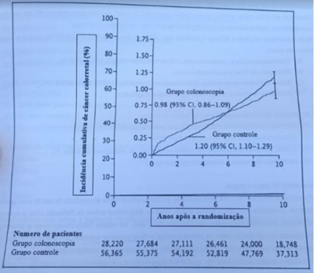
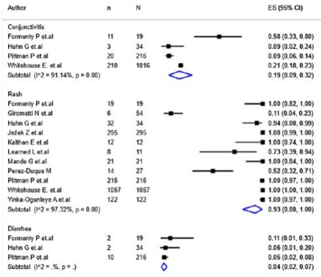
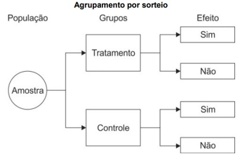
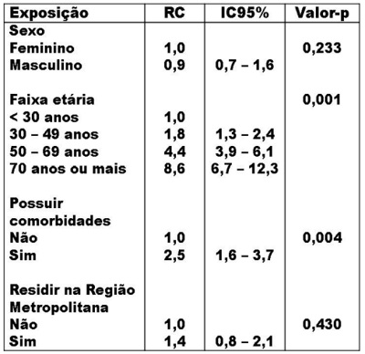
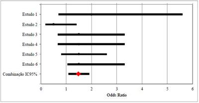
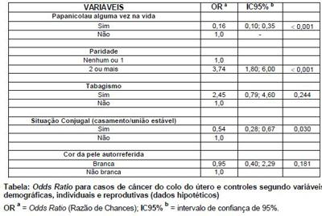
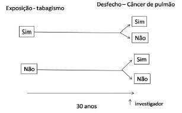
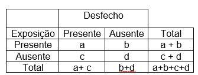

Questão 1 · Medicina Preventiva · 4000193972Leia o texto abaixo para responder à questão: Um estudo epidemiológico foi realizado com o objetivo de avaliar o impacto da poluição do ar na maior metrópole brasileira sobre as internações por doenças respiratórias e cardiovasculares. Com relação aos “Métodos” realizou-se estudo com dados das estações de monitoramento de nove municípios da Região Metropolitana de São Paulo, tendo o PM10 (material particulado inalável) como indicador de poluição e as internações por doenças respiratórias e cardiovasculares como indicadores de efeito. Foram utilizadas, para cada município (unidade de análise foi o município), as contagens diárias de internações por doenças respiratórias (CID10: J00-J99) em todas as idades (DRT), doenças respiratórias (CID10: J00-J99) em menores de cinco anos (DRC) e doenças cardiovasculares (CID10: I00-I99) em maiores de 39 anos (DCV) como desfechos. Analisou-se o PM10 como variável de exposição nos diversos municípios, de forma a permitir a sumarização da estimativa de risco, relativa a esse poluente para a região. As medidas de PM10 cedidas, originalmente de forma horária, foram agregadas ao banco de dados em médias diárias para cada município. As estimativas de risco foram calculadas a partir da introdução da variável explanatória no modelo de trabalho de forma linear. Esse modelo estatístico fornece o risco relativo percentual para cada incremento de 10 μg/m3 nos níveis de PM10. Em todas as análises, assumiu-se nível de significância de 5%. Adaptado de GOUVEIA, N.; CORRALLO, F.P.; LEON, A.C. P. de; JUNGER, W; FREITAS, C. U. de. Poluição do ar e hospitalizações na maior metrópole brasileira. Rev Saúde Pública, 2017, 51:17. Trata-se do estudo epidemiológico:
A Ecológico
B Coorte
C Ensaio clínico
D Transversal
E Ensaio comunitário
Questão 2 · Medicina Preventiva · 4000193966Leia o texto abaixo para responder a questão: Um estudo foi realizado para avaliar a associação entre tempo de amamentação e comportamentos externalizantes na infância e na adolescência (ex: hiperatividade e problemas de conduta). Para tanto, foram utilizados dados de nascimentos de Pelotas- RS de 1993. Desde então, os participantes (nascidos vivos) têm sido acompanhados em diferentes momentos. As informações sobre amamentação foram coletadas aos 12 meses. O comportamento foi avaliado aos 4 anos pelo Inventário de Comportamentos da Infância e da Adolescência (versão brasileira da Child Behavior Checklist, CBCL) e aos 11 e 15 anos pelo Questionário de Capacidades e Di culdades (versão brasileira de Strengths and Di culties Questionnaire, SDQ), ambos aplicados às mães ou aos responsáveis pela criança. POTON, WL; SOARES, ALG; MENEZES, AMB; WEHRMEISTER, FC; GONÇALVES, H. Amamentação e comportamentos externalizantes na infância e adolescência em uma coorte de nascimentos [Breastfeeding and externalizing behaviors in childhood and adolescence in a birth cohort]. Rev Panam Salud Publica. 2018, Feb 19; 41e142. Trata-se do estudo epidemiológico
A observacional, Coorte.
B experimental, Ensaio clínico.
C observacional, Transversal.
D experimental, Ensaio comunitário.
E observacional, Ecológico.
Questão 3 · Medicina Preventiva · 4000193965Leia o texto abaixo para responder a questão: Um estudo foi realizado para avaliar a associação entre tempo de amamentação e comportamentos externalizantes na infância e na adolescência (ex: hiperatividade e problemas de conduta). Para tanto, foram utilizados dados de nascimentos de Pelotas- RS de 1993. Desde então, os participantes (nascidos vivos) têm sido acompanhados em diferentes momentos. As informações sobre amamentação foram coletadas aos 12 meses. O comportamento foi avaliado aos 4 anos pelo Inventário de Comportamentos da Infância e da Adolescência (versão brasileira da Child Behavior Checklist, CBCL) e aos 11 e 15 anos pelo Questionário de Capacidades e Di culdades (versão brasileira de Strengths and Di culties Questionnaire, SDQ), ambos aplicados às mães ou aos responsáveis pela criança. POTON, WL; SOARES, ALG; MENEZES, AMB; WEHRMEISTER, FC; GONÇALVES, H. Amamentação e comportamentos externalizantes na infância e adolescência em uma coorte de nascimentos [Breastfeeding and externalizing behaviors in childhood and adolescence in a birth cohort]. Rev Panam Salud Publica. 2018, Feb 19; 41e142. A conclusão do estudo foi que embora o aleitamento materno por pelo menos 6 meses tenha sido inversamente associado à hiperatividade aos 11 anos, nenhuma associação foi observada aos 4 e aos 15 anos. Novos estudos devem considerar outros fatores que in uenciam os comportamentos externalizantes, tais como presença do pai no ambiente familiar, violência doméstica e maus-tratos qualidade da relação mãe-filho. Obs: RR = Risco Relativo; IC95% = Intervalo de Confiança de 95%. Diante do quadro acima, assinale a alternativa CORRETA.
A Aos 11 anos, após ajuste para fatores de confusão, as crianças que foram amamentadas por pelo menos 6 meses tiveram menor risco (“protegidas”) de hiperatividade (RR=1,54; IC95%: 0,32 a 1,91) em comparação às amamentadas por menos de 1 mês.
B Aos 11 anos, após ajuste para fatores de confusão, as crianças que foram amamentadas por pelo menos 6 meses tiveram maior risco de hiperatividade (RR=0,54; IC95%: 0,32 a 0,91) em comparação às amamentadas por menos de 1 mês.
C Nenhuma associação significativa foi observada aos 4 anos entre duração da amamentação e comportamentos externalizantes com Risco Relativo = 0,78 com respectivo Intervalo de Confiança de 95% entre 0,36 e 0,88.
D Aos 11 anos, após ajuste para fatores de confusão, as crianças que foram amamentadas por pelo menos 6 meses tiveram menor risco (“protegidas”) de hiperatividade (RR=0,54; IC95%: 0,32 a 0,91) em comparação às amamentadas por menos de 1 mês.
E Nenhuma associação significativa foi observada aos 15 anos entre duração da amamentação e comportamentos externalizantes com Risco Relativo = 1,29 com respectivo Intervalo de Confiança de 95% entre 1,27 e 1,35.
Questão 4 · Medicina de Família e Comunidade · 4000193911Realizou-se estudo com emparelhado de dois grupos. Foram identificados 117 pessoas com diabetes mellitus e submetidas a amputações de extremidades inferiores, na rede de serviços do Município de São Paulo, estes foram comparados com 234 pessoas com diabetes mellitus, mas não submetidas a amputações. As variáveis consideradas no emparelhamento foram sexo, idade e duração da doença. Características sociodemográ cas, de hábitos de vida, clínicas e relativas à educação em saúde em diabetes mellitus foram incluídas. Inicialmente, foi realizada análise univariada, verificando a presença de associações entre amputações e variáveis exploratórias. Foi utilizado modelo de regressão logística condicional para a análise multivariada, com adoção da medida de associação especí ca. (GAMBA, 2004) Com base no trecho do artigo, é possível dizer que se trata de um desenho do tipo:
A Coorte.
B Caso-controle.
C Transversal.
D Ecológico.
E ECR.
Revisar: possível letra faltando em enunciado
Questão 5 · Ensaios clínicos · 4000190563Durante a pandemia, você quis buscar evidências sobre o uso do tocilizumabe em pacientes com Covid-19 grave intubados. Após busca ampla da literatura, você identi cou apenas um ensaio clínico randomizado que possuía a seguinte pergunta estruturada: P (pacientes): Adultos com diagnóstico confirmado de Covid-19 e intubados. I (intervenção): Tocilizumabe + cuidados usuais. C (comparador): Cuidados usuais. O (outcome, desfecho): Mortalidade em 28 dias. Após leitura crítica do estudo, você percebeu que os autores não utilizaram placebos ou qualquer estratégia para mascaramento. Diante do exposto, assinale a alternativa correta.
A A utilização de placebos é dispensável no caso do estudo, pois os pacientes estão intubados e não existe a possibilidade de influência nos resultados.
B A ausência de mascaramento coloca o estudo em alto risco de viés de performance pela possível influência de co-intervenções pela equipe multidisciplinar que está cuidando dos pacientes.
C O desfecho mortalidade em 28 dias é suscetível a viés de detecção pelo fato de os avaliadores dos desfechos saberem quais pacientes estavam no grupo controle.
D Como o ensaio clínico foi randomizado, a ausência de mascaramento não afeta o processo inferencial deste estudo.
Revisar: possível letra faltando em alt B
Questão 6 · Estudos de CasoControle · Estudos de Coorte · 4000190561Sobre os estudos de coorte e caso-controle, escolha a alternativa correta.
A Os estudos coortes prospectivos são menos suscetíveis a vieses de memória/recordação que estudos de caso- controle.
B Os estudos coorte são menos suscetíveis a vieses que estudos caso-controles pois são longitudinais, enquanto os caso-controle são transversais por natureza.
C Um estudo coorte é preferível em comparação a um caso-controle pois em um estudo coorte é possível se concluir que o fator de exposição ocorreu antes da incidência da doença.
D Em um estudo caso-controle prospectivo é possível estabelecer melhor relação causal entre fator de exposição e doença do que em um estudo coorte retrospectivo.
Questão 7 · Estudos SeccionaisTransversais · 4000190559Estudo aponta que o consumo de álcool aumenta no decorrer do curso de Medicina. Os autores avaliaram o consumo de álcool nos últimos 12 meses, com questões que analisaram quantidade e frequência do consumo da bebida; sintomas da dependência; e as consequências negativas do hábito nos universitários do curso de Medicina. O resultado computou o consumo de bebidas alcoólicas em 81,1%, informando também que, tanto para os homens quanto para as mulheres, o hábito de beber aumenta à medida que o curso avança. Assinale a alternativa com o nome desse tipo de estudo.
A Estudo caso-controle.
B Estudo coorte.
C Estudo transversal.
D Estudo ensaio clínico.
Questão 8 · Estratégia de observação longitudinal x transversal · 4000190558Você é o médico responsável por um ambulatório de atenção primária que atua na prevenção de doenças e promoção geral em saúde. Um paciente a rma que iniciou por conta própria a tomar vitamina D, e te apresenta a seguinte notícia de jornal: “Pacientes internados com câncer possuem baixos níveis de vitamina D”. Após leitura da notícia, você percebe que ela foi baseada em um estudo transversal que avaliou 20 pacientes internados com diagnóstico de algum tipo de câncer. Diante da situação descrita, assinale a alternativa correta.
A A conclusão do paciente, que o levou a iniciar a reposição de vitamina D, é adequada, pois o desenho apresentado indica uma tendência de relação causal entre a deficiência de vitamina D e câncer.
B Como baixos níveis de vitamina D foram associados à ocorrência de câncer, a reposição de vitamina D deve prevenir a ocorrência de câncer, sendo dispensáveis ensaios clínicos randomizados neste caso.
C Em um estudo transversal como o apresentado na notícia, não é possível estabelecer a temporalidade entre desfecho (incidência do câncer) e exposição (níveis de vitamina D).
D O melhor desenho para avaliar a associação de um fator de exposição (níveis de vitamina D) e desfecho (incidência de câncer) seria um estudo transversal ecológico, pois existem vários tipos de câncer que podem ter diferentes interações com a vitamina D.
Questão 9 · Ensaios clínicos de superioridade equivalência e nãoinf erioridade · 4000190556Você quer se atualizar sobre o tratamento de pacientes com tromboembolismo pulmonar e encontra o seguinte ensaio clínico randomizado (hipotético) que avaliou a efetividade de uma nova droga “Trombolina” para pacientes com tromboembolismo pulmonar. O ensaio clínico possui a seguinte pergunta estruturada: P (pacientes): Adultos com tromboembolismo pulmonar instável. I (intervenção): “Trombolina” + cuidados usuais. C (comparador): Placebo + Cuidados usuais. O (outcome, desfecho): Mortalidade em 7 dias. Após leitura crítica do estudo, você concluiu que o estudo é livre de vieses e utilizou uma metodologia adequada para a análise dos dados considerando um nível de signi cância estatística de 5 % (0.05). O resultado apresentado para o desfecho mortalidade em 7 dias foi: Risco relativo (RR) = 0,8; Intervalo de confiança de 95% (IC95%) = 0,6 a 1,0; p = 0,06. Diante do exposto, assinale a alternativa correta.
A O intervalo de confiança afasta aumento de mortalidade com a intervenção, indicando um potencial benefício clínico com a sua utilização nos pacientes com tromboembolismo pulmonar instável.
B O resultado é não estatisticamente significante pois o valor de p foi maior que 0,06, o que indica que a “trombolina” não possui efeito em pacientes com tromboembolismo pulmonar instável.
C O intervalo de confiança cruza a linha da nulidade (1,0) não sendo possível concluir nada substancial sobre a efetividade da intervenção.
D É possível recomendar a “trombolina” pois o valor de p foi superior à probabilidade da ocorrência de redução de mortalidade ao acaso (5%).
Questão 10 · Estudos de CasoControle · 4000190408Um modelo de estudo epidemiológico recomendado para abordagem de associações etiológicas com doenças de baixa incidência é o estudo
A de prevalência.
B caso-controle.
C de coorte transversal.
D de coorte concorrente.
E seccional.
Questão 11 · Estudos de f ase IV e Farmacovigilância · 4000190241Assinale a alternativa correta sobre a farmacovigilância de vacinas e outros imunobiológicos.
A Tem como foco apenas as vacinas recentemente aprovadas como a da covid-19, por exemplo.
B Fundamenta-se na obtenção de dados completos sobre eventos adversos a partir de notificações feitas somente por médicos, que têm a atribuição de estabelecer causalidade em relação ao produto administrado.
C Um comitê internacional de farmacovigilância de vacinas e outros imunobiológicos, com a participação dos fabricantes, avalia os aspectos técnicos e científicos de eventos adversos decorrente do uso de vacinas.
D É o processo de detecção, avaliação, compreensão, prevenção e comunicação de eventos adversos pós- vacinação (EAPV) ou qualquer outro problema relacionado à vacina ou à imunização.
E Sempre que um profissional de saúde estabelecer causalidade entre eventos adversos e o produto administrado, tem a obrigação de comunicar riscos e esclarecimentos à população.
Questão 12 · Risco Relativo RR Razão de Riscos · 4000190240Um estudo de coorte para investigar a ocorrência de uma determinada doença por exposição a um fator X apresenta risco relativo igual a 1,0. Assinale a alternativa correta.
A Há ausência de associação entre a exposição ao fator X e a ocorrência da doença.
B Deve-se comparar o risco relativo e a razão de prevalência antes de uma conclusão.
C O risco relativo não tem significado nesse caso.
D Há um risco diminuído entre os expostos ao fator X de ficarem doentes.
E Há aumento de risco entre os expostos ao fator X de ficarem doentes.
Questão 13 · Odds Ratio ou Razão de Chances · Risco Relativo RR Razão de Riscos · 4000190192Existem várias derivações do conceito de risco na epidemiologia, mas as duas mais importantes são as seguintes medidas de associação: Risco Relativo ou Razão de Risco (RR) e Razão de Chances ou Odds Ratio (OR). Sobre essas medidas, pode-se afirmar que
A A Razão de Chances responde à seguinte pergunta: “Quantas vezes é maior o risco de desenvolver a doença entre os indivíduos expostos em relação aos indivíduos não expostos?”
B Odds Ratio (OR) é a razão de dois riscos e/ou a razão entre duas taxas de incidência ou de mortalidade. Corresponde ao risco da doença entre os indivíduos que tenham tido uma dada exposição dividido pelo risco da doença entre aqueles que não tenham tido essa exposição.
C A medida de associação que é normalmente utilizada nos estudos de Coorte é o Risco Relativo.
D A interpretação do resultado da OR é semelhante à do RR, a diferença é que a Odds Ratio refere-se ao “risco/probabilidade”.
E O Risco Relativo responde à seguinte dúvida: se a chance de desenvolver a doença no grupo de expostos é maior (ou menor) do que no grupo de não expostos.
Questão 14 · Tipos de Desf echo · 4000190191A realização de estudos epidemiológicos é muito importante para que sejam identi cadas as causas ou a etiologia das doenças e seus fatores de risco. Assim, é possível desenvolver estratégias preventivas que reduzam ou mesmo eliminem a exposição aos fatores de risco. A finalidade primordial desses estudos é:
A Reduzir a morbidade e mortalidade por agravos ou doenças.
B Facilitar o acesso às informações e fomentar políticas públicas.
C Realizar testes estatísticos e descartar a hipótese nula do estudo.
D Estudar o risco de adoecimento e as chances de cura.
E Aumentar as chances de cura e reduzir a mortalidade por agravos notificáveis.
Questão 15 · Ensaios clínicos · 4000190190“São estudos de intervenção, também denominados experimentos cuja unidade de coleta é o indivíduo, o qual sofre alguma intervenção do pesquisador com objetivo de avaliar a e cácia e efetividade de procedimentos diagnósticos, preventivos e terapêuticos, mas podem também testar hipóteses etiológicas.” (ALMEIDA-FILHO; BARRETO, 2012). Como exemplo, tem-se os estudos para tratamento de doenças comparando a e cácia de um medicamento novo com um já amplamente utilizado, em grupos de pessoas com características homogêneas”. Essa definição é o conceito de:
A Estudos de Coorte.
B Estudos Ecológicos.
C Ensaios clínicos.
D Estudo Transversal.
E Estudo de Caso-controle.
Questão 16 · Medicina de Família e Comunidade · 4000190065Em um estudo realizado na cidade X, todas as crianças nascidas no ano de 1995 foram avaliadas quanto ao tipo de aleitamento recebido nos primeiros seis meses de vida. Após cinco anos, essas mesmas crianças foram avaliadas quanto ao desenvolvimento de asma. Constatou-se que o aleitamento materno exclusivo nos primeiros seis meses de vida reduziu em cinco vezes o risco de se desenvolver asma até os 5 anos de idade. O estudo realizado é do tipo:
A ensaio clínico
B caso-controle
C ecológico
D coorte
Questão 17 · Revisões sistemáticas · 4000189899Existem várias formas de classificar uma pesquisa, mas a maioria tem em comum o método aplicado para desenvolver a pesquisa. Uma classificação geral, considerando: a modalidade os objetivos e a forma de abordagem, em relação a modalidade podemos afirmar que é uma pesquisa bibliográfica quando?
A Tem por objetivo a caracterização inicial do problema e constitui a primeira etapa de toda a pesquisa científica.
B Observa os fatos e como eles ocorrem. Nos permite separar e controlar as variáveis, além de perceber e estudar as relações estabelecidas.
C Levantamento ou revisão de um conjunto de dados de documentos, livros dissertações.
D Tem por objetivo ampliar os fundamentos teóricos, definir leis mais amplas, estruturar sistemas e modelos teóricos, relacionar hipóteses.
Questão 18 · Tipos de Estudos Epidemiológicos · 4000189898São tipos de estudos epidemiológicos. Exceto:
A Estudos Analíticos.
B Estudos de Coorte.
C Estudos Descritivos.
D Estudos Metafísicos
Questão 19 · Estudos de Coorte · 4000189888Fazem parte do grupo de estudos observacionais de cunho epidemiológico que se propõem a observar, em uma população previamente definida, qual será a incidência de determinada doença ou fenômeno relacionado à saúde ou doença. Segundo a classificação estamos falando de:
A Estudo ecológico.
B Estudo de Coorte.
C Estudo de series de casos.
D Estudo de corte transversal.
Questão 20 · Estudos de Coorte · 4000189616Assinale o estudo epidemiológico que é o MAIS indicado para identificar os fatores de risco de uma doença.
A Estudo transversal.
B Série de casos.
C Ensaio clínico.
D Estudo de coorte.
Questão 21 · Estratégia de observação longitudinal x transversal · 4000189341Considere o seguinte estudo: Em 1975 foram avaliadas 40.268 mulheres com 20 anos ou mais, enquanto as amostras de 1989 e 1997 foram de 7.160 e 5.137 mulheres, respectivamente. Para cada um dos levantamentos, foram calculadas as proporções de mulheres subnutridas (índice de massa corpórea – IMC < 18,5 kg/m2) e de mulheres obesas (IMC > 30 kg/m2), agrupadas por nível de renda. Observou-se uma clara mudança na condição nutricional das mulheres brasileiras: em 1975 havia 2 mulheres subnutridas para cada mulher obesa, enquanto em 1997 a relação passou a ser de 2 casos de obesidade para cada caso de subnutrição. Em 1997, as mulheres de menor renda apresentavam risco significativamente maior de desnutrição e de obesidade, comparadas às mais ricas. O tipo de estudo realizado é:
A Ensaios clínicos.
B Estudos de coorte.
C Estudos caso-controle.
D Estudos de corte transversal.
Questão 22 · Estudos de CasoControle · 4000189329Com relação aos tipos de estudos epidemiológicos, é CORRETO afirmar:
A Nos estudos de corte transversal é sempre possível estabelecer relações de causa e efeito.
B Os estudos de série de casos são estudos mais complexos, sendo irrelevantes para descrever procedimentos inovadores testados com um pequeno número de pacientes.
C Os estudos do tipo caso-controle são recomendados principalmente para a pesquisa de fatores de risco para doenças raras e doenças congênitas.
D Os estudos de coorte geralmente apresentam baixo custo e tempo abreviado para a execução do estudo.
Questão 23 · Estudos de CasoControle · 4000189325Um estudo veri cou a influência do peso ao nascer e o desenvolvimento de diabetes tipo I na infância e adolescência. Para isso, recrutaram 500 jovens diabéticos, onde foram interrogados sobre seu peso ao nascer a partir dos dados de registro da maternidade. Foram considerados como peso normal todos aqueles que nasceram com até 3,9kg e como peso elevado aqueles que nasceram com mais de 3,9kg. Esses 500 jovens foram pareados por sexo e idade com outros 500 jovens não- diabéticos, aos quais também tiveram seu peso ao nascer verificado. Os pesquisadores concluíram que o peso ao nascer não in uenciou o desenvolvimento de diabetes tipo I Sobre o desenho de estudo acima, é correto a rmar que trata-se de um estudo:
A Transversal
B Coorte
C Ecológico
D Caso-controle
Questão 24 · Análise multivariada · 4000189322Uma alternativa para controlar os fatores de confusão em um estudo observacional é:
A Amostra aleatória.
B Viés de seleção.
C Alocação randomizada.
D Análise multivariada.
Questão 25 · Estudos de Prevalência · 4000188640Pro ssionais do Ministério da Saúde publicaram um artigo com o objetivo de descrever características epidemiológicas e clínicas da monkeypox (MPX) no Brasil desde a identi cação do primeiro caso, em 7 de junho de 2022, até a semana epidemiológica (SE) 39, encerrada em 1º de outubro de 2022. Para tanto, eles delinearam um estudo sobre os casos noti cados ao Ministério da Saúde; as tendências foram analisadas sobre o número de casos confirmados e prováveis, por SE; os casos foram descritos segundo variáveis demográ cas e variáveis clínicas (Fonte: Pascom et al. Epidemiol. Sev. Saúde. 2022; 31(3): e2022851). O estudo pode ser classificado como epidemiológico do tipo.
A transversal analítico.
B transversal descritivo.
C prospectivo.
D experimental.
E relato de caso.
Revisar: possível letra faltando em enunciado
Questão 26 · Estudos SeccionaisTransversais · 4000188612Pesquisadores querem realizar um estudo que tem por objetivo avaliar a prevalência de anticorpos anti-SARS-CoV-2 entre pro ssionais que atuam nas unidades do Hospital Estadual Dirceu Arcoverde. O melhor desenho do estudo para atingir esse objetivo é
A Experimental.
B Caso-controle.
C Coorte prospectivo.
D Ecológico.
E Transversal.
Questão 27 · Medidas de Associação e Medidas de Impacto · 4000188611Um estudo identi cou que diabetes melito associou-se significativamente à mortalidade em pacientes hospitalizados por Covid-19 (Odds ratio 1.54, intervalo de con ança 95% 1.11-1.96, P = 0.002). O conceito que melhor avalia essa associação de causalidade é:
A Relação dose-resposta.
B Força da associação.
C Eliminação da exposição.
D Reprodutibilidade dos achados.
E Relação temporal.
Questão 28 · Metanálises e Revisões sistemáticas · 4000188405No posto de saúde, um médico atende uma pessoa com 53 anos, em que a hipertensão não está controlada. Ele decide, então, aumentar a dose do diurético que ela já utilizava, cando, no entanto, com uma dúvida sobre se deveria ou não adicionar outro fármaco. Ele resolveu pesquisar sobre o assunto. Que tipo de delineamento ele deve preferencialmente revisar na literatura?
A Estudo de coorte
B Estudo transversal
C Estudo de caso e controle
D Estudo de metanálise a partir de ensaios clínicos randomizados.
Questão 29 · Ensaios clínicos · 4000188398Em um estudo clínico, quando o enfoque é o diagnóstico, o tipo do delineamento deve ser:
A Estudo descritivo observacional.
B Coorte.
C Caso controle.
D Ensaio clínico randomizado.
Questão 30 · Estudos de CasoControle · 4000188387Assinale a alternativa CORRETA sobre os desenhos de estudos epidemiológicos.
A São exemplos de estudos analíticos observacionais: coorte, caso-controle e transversal.
B Estudos descritivos são os estudos mais apropriados para testar hipóteses de associação.
C São exemplos de estudos experimentais: coorte, descritivo e ensaio clínico.
D O estudo caso-controle é classificado como transversal.
Questão 31 · Estudos de Coorte · 4000188383Qual o tipo de delineamento mais adequado para investigar a prevalência de tuberculose em núcleos rurais de um município?
A Estudo de coorte.
B Estudo transversal.
C Estudo randomizado em paralelo.
D Estudo cruzado.
Questão 32 · Estratégia de observação longitudinal x transversal · 4000188292Abaixo estão listadas características de determinados estudos epidemiológicos, exceto:
A Coorte: parte do fator de risco
B Transversal: Não determina causalidade
C Coorte: busca da doença
D Transversal: determina causalidade
E Caso-controle: parte da doença
Questão 33 · Erros Sistemáticos ViésVieses · 4000188290Marque a correlação errada entre tipo de estudo e viés:
A Estudo de coorte: viés de suscetibilidade.
B Estudo caso controle: viés de memória e do entrevistador.
C Ensaios clínicos: viés de amostragem.
D Estudos de prognósticos: viés de memoria.
E Estudos de rastreio: viés de aderência.
Questão 34 · Estudos de CasoControle · 4000188221Sobre desenhos de pesquisa epidemiológica, é correto afirmar:
A Estudos ecológicos apresentam elevado poder analítico.
B Estudos de caso-controle são úteis para desfechos com longos períodos de latência.
C Estudos seccionais são adequados para testarem hipóteses causais.
D Estudos de coorte são úteis para investigar doenças de baixa frequência.
E No ensaio clínico randomizado a definição dos grupos experimental e de controle se dá por conveniência.
Questão 35 · Odds Ratio ou Razão de Chances · 4000188219Você está acompanhando uma mulher de 62 anos com úlcera péptica e angina estável, para qual havia sido prescrito ácido acetilsalicílico (AAS) em dose baixa, estatina, inibidor da enzima conversora de angiotensina e nitrato, quando necessário. Recentemente, esta paciente apresentou sangramento alto do trato gastrointestinal. A biópsia realizada por endoscopia digestiva alta foi negativa para Helicobacter pylori. Durante a internação, o gastroenterologista substituiu o AAS por clopidogrel, e fez contato com você, citando uma metanálise de ensaios clínicos randomizados que encontrou menor chance de sangramento gastrointestinal com uso do último comparado ao primeiro (razão de chances 0,71; intervalo de confiança 95% 0,59 - 0,86). Com base nestes achados, podem afirmar:
A O clopidogrel reduziu em 71% a chance de sangramento gastrointestinal.
B A redução do risco de sangramento não foi estatisticamente significativa.
C Pacientes em uso de clopidogrel comparados aqueles em uso de AAS apresentam redução da chance de sangramento gastrointestinal de 29%.
D O risco de sangramento gastrointestinal em uso do ácido acetilsalicílico é de 29%.
E A redução do risco de sangramento não foi clinicamente significativa, uma vez que o intervalo de confiança não inclui o número 1.
Questão 36 · Ensaios clínicos · 4000188218A Medicina Baseada em Evidências preconiza que a prática clínica deve ser fundamentada nas melhores evidências cientí cas disponíveis. Assinale a alternativa que relaciona adequadamente o tipo de pergunta com o desenho de estudo mais adequado para respondê-la:
A Risco: estudo seccional
B Tratamento: estudo de caso controle
C Prevenção: ensaio clínico randomizado
D Prevalência: estudo de coorte
E Incidência: estudo transversal
Revisar: possível letra faltando em enunciado
Questão 37 · Estudos de Coorte · 4000188037Em relação ao estudo coorte, podemos afirmar que se trata de:
A Estudo observacional, onde os indivíduos são monitorados ao longo do tempo para avaliar a incidência de doença ou de outro desfecho de interesse.
B Estudo que se inicia com a seleção de um grupo de pessoas portadoras de uma doença ou condição específica e um grupo de pessoas que não sofrem dessa doença ou condição.
C Estudo em que o pesquisador provoca uma modificação intencional em algum aspecto do estado de saúde, através da introdução de um esquema profilático ou terapêutico.
D Estudo que se caracteriza pela observação direta de determinada quantidade de indivíduos em uma única oportunidade.
E Estudo observacional, obrigatoriamente prospectivo, onde o tempo de início e fim do estudo são definidos pelo pesquisador.
Questão 38 · Estudos de CasoControle · 4000188033Em um hospital público do Rio de Janeiro, 300 pessoas com diagnóstico de HIV e 300 pessoas sem HIV foram selecionadas para estudo. O objetivo era verificar a existência de diferença na ocorrência ou não de linfoma não Hodgkin em relação a um dado fator de risco. Esse estudo é denominado:
A Coorte
B Ecológico
C De prevalência
D Experimental
E De caso-controle
Questão 39 · Risco Relativo RR Razão de Riscos · 4000188017Foi realizado um ensaio clínico randomizado duplo cego com objetivo de avaliar o efeito da droga "Panaceia" sobre os níveis de Hemoglobina glicada em pacientes com diabetes mellitus tipo 2 (DM2). Abaixo dados do estudo e tabela com seus resultados. População do estudo: adultos com diagnóstico novo (casos incidentes) de DM2, virgens de tratamento, em ambiente de APS. Tempo de seguimento: 1 ano. Intervenção: "Panaceia" 100 mg um comprimido uma vez ao dia + orientação nutricional padronizada. Controle: Metformina 850 mg uma vez ao dia + orientação nutricional padronizada. No estudo em questão, metformina é entendida como padrão ouro para o tratamento de DM2 inicial. Desfecho primário analisado: DM2 descompensado (Hemoglobina glicada acima de 7,0). Desfecho secundário analisado: Eventos adversos graves. Com relação aos dados apresentados do estudo, é possível afirmar:
A O risco relativo (razão de incidência cumulativa) de eventos adversos graves do grupo Panaceia foi de 1,8.
B O NNT (número necessário para tratar) para ter um caso a menos de DM tipo 2 descompensado no grupo Panaceia é 7.
C A mortalidade no grupo ""Panaceia"" foi maior que a mortalidade no grupo controle.
D Como o estudo é randomizado, duplo-cego, com grande validade interna, pode ser extrapolado para pacientes com DM tipo 1.
Questão 40 · Metanálises e Revisões sistemáticas · 4000187888Assinale a alternativa incorreta: (BRASIL. Ministério da Saúde. Cadernos de Atenção Básica, n. 29, Volume II 2013. (Série E. Legislação em Saúde)
A Um exame de rastreamento deve ter ótimas sensibilidade e especificidade, para que resulte em pequenas taxas de falso-positivo e para que dê segurança de que a pessoa realmente não tem a doença quando o resultado for negativo.
B Na anamnese e no exame físico, quando bem feitos e completos, pode-se obter dados para estimar fatores de riscos à saúde com maior precisão, por exemplo, gênero, idade, tabagista ou não, história familiar de Doença Arterial Coronariana prematura e assim por diante.
C Para identificar pacientes com risco de doença cardiovascular, pode-se utilizar o escore de Framingham (1991) com projeção de risco para 10 anos.
D Meta-análises relacionando o colesterol e Doença Arterial Coronariana (DAC), em pessoas idosas, sugerem que o colesterol constitui fator de risco para DAC em pessoas acima de 75 anos de idade.
E Para o rastreamento de hipertensão arterial sistêmica, a aferição ambulatorial com esfignomanômetro é a mais amplamente utilizada. Contudo, devido à variabilidade individual da medida da pressão arterial, é recomendado, para se realizar o diagnóstico, que se obtenham duas ou mais aferições em pelo menos duas ou mais visitas ao longo de um período de uma ou mais semanas.
Questão 41 · Ensaios clínicos · 4000187714Qual tipo de estudo é considerado o padrão-ouro por diminuir o efeito de variáveis de confusão e permitir a padronização da qualidade e quantidade dos fatores, tornando os resultados mais seguros?
A Ensaios clínicos controlados, aleatorizados, não cego.
B Caso-controle que parte do desfecho e vai para a exposição.
C Ensaios clínicos controlados, aleatorizados e duplo cego.
D Coorte que parte da exposição para o desfecho.
Questão 42 · Viés de publicação · 4000187617Qual dos seguintes tipos de estudos tem menor probabilidade de ser publicado?
A Estudos positivos pequenos
B Estudos negativos grandes
C Estudos positivos grandes
D Estudos negativos pequenos
E Nenhuma das anteriores
Questão 43 · Metanálises · 4000187610Qual das seguintes alternativas não faz sempre parte de gráfico de floresta típico?
A O número de estudos que preenchem os critérios de inclusão para qualidade
B Uma magnitude sumaria de efeito com intervalo de confiança
C Estimativas-ponto da magnitude do efeito para cada estudo
D Intervalos de confiança para cada estudo
E O tamanho ou peso contribuído para cada estudo
Questão 44 · Metanálises · 4000187609Qual das seguintes alternativas não pode ser utilizada para identi car gravidade da doença como uma razão para a heterogeneidade em uma revisão sistemática com metanalise?
A Controle para gravidade da doença em uma metanalise a nível do estudo
B Um modelo matemático relacionado a gravidade media da doença ao desfecho em todos os estudos componentes
C Uma comparação da magnitude dos efeitos sumários em estudos estratificados por meio da gravidade da doença
D Analises de subgrupo sobre dados dos pacientes
E Nenhuma das anteriores
Questão 45 · Metanálises · 4000187608Sobre o gráfico do funil:
A Mostra a tendência de que os estudos publicados sejam sistematicamente diferentes dos não publicados
B É uma forma de detectar o viés de seleção de estudos para revisões sistemáticas
C Mostra a estimativa-ponto e o intervalo de confiança para cada um dos estudos na revisão
D Combina os resultados de estudos individuais, desde que sejam semelhantes para justificar uma estimativa quantitativa da magnitude de efeito.
E Nenhuma das anteriores
Questão 46 · Metanálises · 4000187607Sobre o gráfico de floresta:
A Mostra a tendência de que os estudos publicados sejam sistematicamente diferentes dos não publicados
B É uma forma de detectar o viés de seleção de estudos para revisões sistemáticas
C Mostra a estimativa-ponto e o intervalo de confiança para cada um dos estudos na revisão
D Combina os resultados de estudos individuais, desde que sejam semelhantes para justificar uma estimativa quantitativa da magnitude de efeito.
E Nenhuma das anteriores
Questão 47 · Revisões sistemáticas · 4000187605Sobre os elementos de uma revisão sistemática, bem como etapas e considerações metodológicas, podemos a rmar, exceto:
A Constitui uma etapa: identificar as razoes para as diferenças entre os estudos (hetereogeneidade), quando houver
B Na etapa de agrupamento, pelo menos dois revisores são necessários para confirmar a consistência do processo de seleção.
C Constitui uma etapa: descrever as características e o risco de viés de cada estudo
D Constitui uma etapa: definir uma questão específica
E O formato PICO organiza a questão
Questão 48 · Revisões sistemáticas · 4000187603As revisões sistemáticas referem-se a questões especí cas. Para avaliação do efeito de uma intervenção, os elementos dessa especificidade foram definidos sob o acrônimo PICO. A letra "O" deste acrônimo significa:
A Intervenção
B Objetivo
C Observação
D Desfecho
E Nenhuma das anteriores
Revisar: possível letra faltando em enunciado
Questão 49 · Validade Externa · 4000187566Qual a importância dos estudos que focam nos desfechos clínicos:
A Os estudos que focam em desfechos clínicos finais são mais interessantes pois respondem ao objetivo dos médicos de que o paciente viva mais e melhor.
B Estudar os desfechos intermediários pode facilitar implantar procedimentos e medicamentos mais rapidamente e beneficiar o paciente ao longo do tempo efetivamente.
C Para o paciente, não há diferença entre o foco no desfecho clínico intermediário ou final, pois ambos visam o bem-estar do paciente.
D O desfecho intermediário ajuda a pensar o processo de cuidado ao longo do tempo.
Questão 50 · Estudos de Coorte · 4000187445Um estudo foi realizado em uma cidade do interior com 400 adultos acima dos 50 anos para investigar o risco de desenvolver demência. Dos 400 indivíduos, 200 apresentavam diabetes mellitus no início do estudo, enquanto outros 200 não apresentavam. Esses indivíduos foram seguidos por 30 anos e observou-se que, dos diabéticos, 96 apresentaram demência após o período de seguimento. Por outro lado, o desenvolvimento de demência ocorreu em 36 indivíduos no grupo dos não-diabéticos. Qual é o tipo de estudo utilizado?
A Estudo transversal
B Estudo de coorte
C Estudo de sobrevida
D Estudo ecológico
Questão 51 · Risco Relativo RR Razão de Riscos · 4000187444Um estudo foi realizado em uma cidade do interior com 400 adultos acima dos 50 anos para investigar o risco de desenvolver demência. Dos 400 indivíduos, 200 apresentavam diabetes mellitus no início do estudo, enquanto outros 200 não apresentavam. Esses indivíduos foram seguidos por 30 anos e observou-se que, dos diabéticos, 96 apresentaram demência após o período de seguimento. Por outro lado, o desenvolvimento de demência ocorreu em 36 indivíduos no grupo dos não-diabéticos. Qual é o risco relativo/razão de chances de apresentar demência nos indivíduos diabéticos em relação aos não-diabéticos?
A 0,37
B 1,87
C 2,66
D 4,2
Questão 52 · Risco Atribuível · Risco Absoluto · 4000187001O conceito de risco residual:
A Representa a magnitude do risco que não permanece depois que os FR tradicionais são controlados.
B Representa a magnitude do risco que permanece depois que os FR tradicionais não são controlados.
C Representa a magnitude do risco que permanece antes que os FR tradicionais são controlados.
D Representa a magnitude do risco que permanece depois que os FR tradicionais são controlados.
Questão 53 · Estudos de CasoControle · Odds Ratio ou Razão de Chances · Risco Relativo RR Razão de Riscos · 4000186675Sobre as medidas de associação em epidemiologia, assinale a alternativa CORRETA:
A Os estudos de casos e controles e ensaio clínico são delineados para determinar se existe associação entre exposição a um fator e desenvolvimento de uma doença.
B Se o risco relativo for maior do que 1, o risco em pessoas expostas é menor que o risco em pessoas não expostas, evidenciando uma associação negativa, e pode ser indicativo de efeito de proteção.
C Apesar de não se calcular o risco relativo em estudos de casos e controles, sob muitas condições, pode-se obter uma ótima estimativa do risco relativo usando a odds ratio.
D A prevalência de uma doença na população é chamada de risco absoluto. O risco absoluto pode indicar a magnitude do risco em um grupo de pessoas sem exposição.
Questão 54 · Estudos SeccionaisTransversais · 4000186673Um estudo foi desenvolvido na cidade de Bambuí, situada no interior de Minas Gerais, para determinar a prevalência e os fatores sociodemográ cos associados à depressão. Um questionário foi aplicado para identi car os indivíduos com depressão em uma amostra representativa da população da cidade com 18+ anos de idade (1.041 participantes). Os episódios depressivos atuais estavam associados ao sexo, à idade e à condição atual de trabalho. Saliente-se que as determinações do episódio depressivo atual e da ocupação foram feitas simultaneamente, ou seja, não foi possível saber se a ausência de trabalho foi anterior ou posterior ao surgimento do episódio depressivo. Assinale a alternativa que apresenta CORRETAMENTE o tipo de estudo epidemiológico descrito:
A Caso controle.
B Coorte.
C Ecológico.
D Seccional.
Revisar: possível letra faltando em enunciado
Questão 55 · Risco Atribuível · COVID 19 · 4000186600A OMS define Covid-19 longa como uma síndrome “caracterizada como tal três meses após o início da Covid-19, com sintomas que duram, a partir daí, pelo menos dois meses e não podem ser explicados por um diagnóstico alternativo”. Miranda, DAP, et al. (Transactions of The Royal Society of Tropical Medicine and Hygiene, 2022) publicaram um estudo de corte recente em que acompanharam 646 pacientes durante 14 meses com covid-19, confirmada por RT-PCR. A tabela abaixo mostra a associação entre o sexo o risco de Covid longa. A medida que melhor expressa o excesso de casos de Covid longa atribuível ao sexo Feminino (F) é:
A Risco Relativo de 2,15.
B Risco atribuível de 18,98%.
C Odds-Ratio (Razão de chances) de 1,47.
D Risco atribuível de 20,38%.
Questão 56 · Risco Relativo RR Razão de Riscos · 4000186549A colonoscopia constitui uma ferramenta diagnóstica e terapêutica importante nas doenças do aparelho digestivo. O ensaio clinico randomizado "E ect of colonoscopy screening on risk of colorectal cancer and related death" (tradução livre: Efeito da colonoscopia de rastreio no risco do câncer colorretal e mortalidade relacionada") publicado na revista New England Journal of Medicine este ano 2022, testou a hipótese se a colonoscopia reduz a incidência do câncer colorretal, comparando pacientes que zeram a colonoscopia versus os pacientes que não zeram o exame (grupo controle). Os resultados do ensaio clínico são apresentados no gráfico a seguir. Os resultados apresentados mostram que

A a incidência de câncer colorretal ao fim do estudo foi maior nos pacientes que fizeram a colonoscopia.
B o risco relativo de câncer colorretal foi de 1,22 para os pacientes que fizeram a colonoscopia.
C A redução relativa do risco do câncer colorretal nos pacientes foi de 18%.
D A colonoscopia não reduz a incidência do câncer colorretal.
Questão 57 · Mascaramento ou cegamento · 4000186456Os ensaios clínicos controlados randomizados constituem um dos principais avanços cientí cos entre os métodos de pesquisa durante o século XX. Marque a a rmação correta sobre o risco de não utilizar a estratégia de mascaramento/cegamento em ensaios clínicos?
A Este procedimento objetiva neutralizar a influência que os participantes podem ter em decorrência das expectativas sobre eficácia e tolerabilidade do tratamento utilizado, e não tem qualquer influência sobre a atuação da equipe de pesquisa.
B No estudo duplo-cego geralmente é o pesquisador que mede o desfecho e o participante que desconhecem a intervenção sendo administrada. No entanto, ocasionalmente os sujeitos sendo cegos podem mudar e, por isso, não é importante mencionar quem são os cegos.
C Com o cegamento (ou mascaramento) objetiva-se minimizar o erro de informação e consequentemente o viés de informação.
D O conhecimento do grupo de tratamento ao qual os indivíduos pertencem não interferem no processo de coleta de dados.
Revisar: possível letra faltando em enunciado
Questão 58 · Estudos de CasoControle · 4000186454Baseado no estudo publicado em 2020 - Fatores associados ao desfecho de morte em pacientes com doença grave pelo coronavírus (COVID-19): um estudo de caso controle. Justi cativa: até o momento, a exploração de características clínicas em pacientes graves com COVID-19 era principalmente do mesmo centro em Wuhan, China. Os dados clínicos em outros centros são limitados. Este estudo visa explorar os parâmetros viáveis que podem ser usados na prática clínica para prever o prognóstico em pacientes hospitalizados com doença grave por coronavírus (COVID-19). Com base nos estudos Caso- Controle é correto afirmar:
A Permite a investigação simultânea de uma maior variedade de possíveis fatores de risco
B Útil para o estudo de doenças comuns, porque apenas uma amostra da coorte subjacente, os controles é necessária para se obter informação sobre a distribuição da exposição com base populacional.
C Tamanho da amostra é geralmente maior do que em estudos de coorte, podendo-se empregar exames e/ou testes caros para determinar a exposição
D É relativamente mais rápido, porém difícil para controlar a consistência das técnicas de mensuração.
Questão 59 · NNT · 4000186446O estudo DAPA-HF randomizou pacientes com insu ciência cardíaca de fração reduzida (ICFER) sintomática para dapagli ozina ou placebo. O desfecho composto primário de piora da insu ciência cardíaca (hospitalização ou visita urgente resultando em terapia intravenosa para insu ciência cardíaca) ou morte por causas cardiovasculares ocorreu em 386 pacientes (16,3%) no grupo dapagliflozina e em 502 pacientes (21,2%) no grupo placebo (HR 0,74; IC 95% 0,65 a 0,85; P <0,001). O número necessário para tratar foi 21, o que significa que:
A a dapagliflozina reduziu 21 casos de morte e piora da IC em pacientes com ICFER;
B dapagliflozina evita morte e piora da IC em 1 a cada 21 pacientes tratados;
C o risco de morte e piora da IC foi reduzido em 21%;
D NNT é uma medida relativa de utilidade.
Questão 60 · Estudos de CasoControle · Odds Ratio ou Razão de Chances · 4000186442Um estudo publicado este ano mostrou que a exposição ocupacional a agrotóxicos foi associada a neoplasias hematológicas. O delineamento do estudo epidemiológico e a medida de associação mais apropriada para este tipo de estudo, respectivamente, são:
A Coorte - razão de prevalência
B Caso-controle - razão de prevalência
C Coorte - odds ratio
D Caso-controle - odds ratio
Questão 61 · Estudos Ecológicos · 4000186382Os estudos ecológicos apresentam as seguintes características:
A podem ser subdivididos em investigações de base territorial e estudos de agregados institucionais.
B não abordam áreas geográficas específicas.
C podem ser classificados em cinco subtipos.
D não trabalham com blocos de população bem delimitados.
E sempre utilizam informações da doença e da exposição do indivíduo.
Questão 62 · Estratégia de observação longitudinal x transversal · Estudos de Prevalência · 4000186348Consideramos as principais limitações de um estudo de corte transversal, EXCETO:
A não mede incidência.
B não é o mais apropriado para se estudar associações causais.
C não são apropriados para doenças de baixa prevalência.
D não são apropriados para situações em que a doença e/ou exposição mudam no tempo.
E é apropriado para doenças de curta duração.
Questão 63 · Estudos de Prevalência · 4000186342Em relação aos estudos epidemiológicos, o desenho mais comum disponível é o estudo
A caso-controle.
B transversal.
C coorte.
D série de casos.
E longitudinal.
Questão 64 · Def inição de Medicina Baseada em Evidências · 4000186340O conceito de Medicina Baseada em Evidência significa:
A usar apenas a prática clínica para definir o melhor tratamento.
B a tomada de decisões clínicas sem utilizar dados científicos.
C o uso consciente, explícito e judicioso das melhores evidências disponíveis para a tomada de decisões acerca do cuidado dos pacientes.
D a prática clínica baseada apenas em estudos de Coorte.
E a prática médica baseada na opinião de especialistas.
Questão 65 · Ensaios clínicos · 4000186133No ano de 2015 foi publicado o estudo APPAC que comparou o tratamento cirúrgico contra o uso de antibióticos na apendicite não complicada. O resultado do acompanhamento dos pacientes por mais 5 anos foi publicado em 2018. O estudo foi desenhado da seguinte forma: 530 pacientes com idade entre 18 e 60 anos, com apendicite confirmada, foram randomizados para receber tratamento cirúrgico por meio de apendicectomia ou então terapia antimicrobiana isolada. Os pacientes foram então analisados por 5 anos, tendo como desfechos a recorrência, a taxa de complicações e o tempo de hospitalização. O resultado do estudo está na tabela abaixo: Como esse estudo pode ser classificado?

A Coorte.
B Caso-Controle.
C Estudo Transversal.
D Estudo Ecológico.
E Ensaio Clínico.
Questão 66 · Ensaios clínicos · Posição do observador observacional x experimental · 4000186132No ano de 2015 foi publicado o estudo APPAC que comparou o tratamento cirúrgico contra o uso de antibióticos na apendicite não complicada. O resultado do acompanhamento dos pacientes por mais 5 anos foi publicado em 2018. O estudo foi desenhado da seguinte forma: 530 pacientes com idade entre 18 e 60 anos, com apendicite confirmada, foram randomizados para receber tratamento cirúrgico por meio de apendicectomia ou então terapia antimicrobiana isolada. Os pacientes foram então analisados por 5 anos, tendo como desfechos a recorrência, a taxa de complicações e o tempo de hospitalização. O resultado do estudo está na tabela abaixo: Sobre o resultado do estudo, assinale a alternativa CORRETA.

A O grupo submetido a tratamento clínico apresentou uma incidência menor de complicações do que o grupo submetido ao tratamento cirúrgico, com significância estatística.
B O grupo submetido a tratamento clínico apresentou uma incidência maior de dor abdominal do que o grupo submetido ao tratamento cirúrgico, com significância estatística.
C O grupo submetido a tratamento clínico apresentou uma incidência menor de complicações do que o grupo submetido ao tratamento cirúrgico, porém sem significância estatística.
D O grupo submetido a tratamento clínico apresentou uma incidência menor de hérnia incisional do que o grupo submetido ao tratamento cirúrgico, com significância estatística.
E O grupo submetido a tratamento clínico apresentou uma incidência maior de sintomas obstrutivos do que o grupo submetido ao tratamento cirúrgico, com significância estatística.
Questão 67 · Metanálises e Revisões sistemáticas · Metanálises · 4000185976Em 2022, Benites-Zapata publicou um artigo onde avalia os 12 artigos previamente publicados acerca das manifestações clínicas da infecção por Monkeypox. Dentre os achados, a presença de rash cutâneo está entre os sintomas mais comuns (93%) e a diarreia entre os menos comuns (4%), conforme ilustrada na tabela abaixo: Qual é o tipo de estudo que melhor descreve este trabalho conduzido por Benites-Zapata?

A Revisão sistemática.
B Série de casos.
C Estudo de prevalência.
D Coorte retrospectiva.
E Meta-análise.
Questão 68 · Estudos de Coorte · 4000185939Ronaldson e colaboradores (2021) realizam uma análise do banco de dados do English Longitudinal Study of Ageing (ELSA) avaliando em 11.391 pessoas a relação entre clusters de multimorbidade física e mudanças em comportamentos sociais ao longo de 15 anos. Quatro grupos de multimorbidade física foram identi cados. Todos os clusters de multimorbidade física foram associados a uma redução no envolvimento cultural (por exemplo, visitas a teatro, cinema, museus) ao longo do tempo, com a associação mais forte observada no cluster complexo/multissistêmico ( Resultados semelhantes ocorreram para atividades de lazer. Após ajuste de modelo, a presença de sintomas depressivos atenuou totalmente algumas associações. De acordo com as informações do texto, qual é a natureza deste estudo?
A Ecológico de séries temporais, no qual o ano de nascimento da população observada é especificado e as taxas de mudanças de comportamentos sociais em cada cluster são comparadas.
B Transversal sobre a relação entre agrupamentos de morbidades e comportamentos sociais, em que a maior taxa de prevalência de cluster foi de 26%.
C Coorte longitudinal prospectivo controlado por variáveis de confusão na análise multivariada, em que a variável desfecho é a mudança no comportamento social.
D Ensaio clínico, no qual se comparam mudanças em comportamentos sociais conforme presença de clusters de morbidades.
Questão 69 · NNT · 4000185809Um estudo controlado randomizado avaliou a e cácia do autocontrole do paciente com a anticoagulação para reduzir os riscos de sangramento. Nesse estudo, um grupo de pacientes foi treinado para ajustar sua própria varfarina com base nos resultados da razão normalizada internacional (INR) obtidos usando um dispositivo INR doméstico. Esse grupo foi comparado com um grupo de pacientes que visitava a UBS a cada 4 semanas para verificações de INR. Em 1 ano, o grupo de autogestão teve um risco de 2% de quaisquer eventos hemorrágicos (maior ou menor), comparado com 7% no grupo acompanhado na UBS. Com base nessa informação, qual é o número de pacientes que precisa ser inscrito em um sistema de autogestão de sua anticoagulação por 1 ano para reduzir um evento adverso de sangramento?
A 2.
B 7.
C 14.
D 20.
E 40.
Questão 70 · Estratégia de observação longitudinal x transversal · Estudos SeccionaisTransversais · 4000185767Um estudo objetivou verificar fatores associados à piora do estilo de vida, durante a pandemia de COVID-19, entre trabalhadores por aplicativos residentes no Brasil. Para tal, aplicou um questionário, contendo questões sociodemográ cas e sobre o estado de saúde, a pessoas selecionadas aleatoriamente a partir de um banco de informações sobre trabalhadores de uma empresa de entrega de alimentos por aplicativo que opera nacionalmente. A aplicação do questionário a cada trabalhador se deu entre os meses de outubro e dezembro de 2020, por telefone, sendo entrevistados 1500 pessoas. Foi realizada análise estatística descritiva, bivariada e de regressão logística. O desenho do estudo descrito acima é:
A Ecológico.
B Transversal.
C Caso-controle.
D Coorte.
Revisar: possível letra faltando em enunciado
Questão 71 · Medicina Preventiva · 4000185542Para se avaliar a associação entre a depressão e o risco de óbitos entre pessoas idosas, em uma população urbana da região Nordeste do Brasil, 160 pessoas foram acompanhadas em um estudo de coorte prospectivo. A depressão foi diagnosticada em 70 dos participantes do estudo. Houve 46 óbitos no total, sendo 28 entre as pessoas com depressão e 18 entre as pessoas sem depressão. Assinale a alternativa que apresenta o risco relativo de óbito associado à depressão neste estudo, utilizando a aproximação até a segunda casa decimal.
A 0,18.
B 0,40.
C 1,55.
D 2,00.
Questão 72 · Risco Relativo RR Razão de Riscos · Estudos de Coorte · 4000185368Assinale a alternativa que apresenta o indicador de saúde possível de se obter por meio de um estudo de Coorte, que outros delineamentos epidemiológicos não fornecem.
A Coeficiente de mortalidade por determinada doença.
B Risco relativo.
C Coeficiente de prevalência.
D Coeficiente de letalidade.
E Índice de Swaroop & Uemura.
Questão 73 · Medicina Preventiva · 4000185202Com o objetivo de avaliar o impacto da triagem populacional com o exame de antígeno prostático específico (PSA), visto que o diagnóstico precoce é considerado um fator importante para a efetividade do tratamento do câncer, realizou-se um estudo com dois grupos: grupo A, que realizou a dosagem de PSA por 10 anos, e grupo B, que não realizou o exame de forma periódica. Considerando esse caso hipotético, entre as alternativas apresentadas a seguir, assinale aquela que melhor apresenta, respectivamente, o estudo descrito e a interpretação adequada.
A Utilizou-se um ensaio clínico e o exame de PSA não teve efeito na redução da mortalidade por câncer de próstata.
B Utilizou-se um ensaio clínico e o exame de PSA foi eficaz porque aumentou o número de diagnósticos de câncer de próstata.
C Utilizou-se um estudo de coorte e o exame de PSA não teve efeito na redução da mortalidade por câncer de próstata.
D Utilizou-se um estudo de caso-controle e os dados são insuficientes para avaliar a eficácia do exame de PSA.
E Utilizou-se um estudo de coorte e os dados são insuficientes para avaliar a eficácia do exame de PSA.
Questão 74 · Estudos de f ase II · Ensaios clínicos Fase I a Fase IV · Outros · 4000184762A vacina contra a COVID-19 produzida pelo Instituto Butantan em parceria com a farmacêutica chinesa Sinovac foi avaliada em diversas pesquisas e análises populacionais. Um dos principais estudos foi o ensaio clínico de fase 3 realizado, em 2020, pelo Butantan em parceria com 16 centros de pesquisa brasileiros, que testou o imunizante em cerca de 13 mil voluntários (Fonte: Instituto Butantan, 22/06/2021). Pode-se afirmar, sobre os ensaios clínicos, que os de fase:
A 3 são ensaios de efetividade.
B 2 são ensaios-piloto de eficácia.
C 1 são ensaios de imunogenicidade.
D 4 são ensaios controlados e randomizados.
Questão 75 · Estudos Ecológicos · Estudos de CasoControle · Outros · 4000184760Analise as afirmativas a seguir: I) em estudos caso-controle o investigador controla a exposição ao fator de interesse; II) em estudos ecológicos a informação é obtida e analisada no nível agregado; III) em estudos quasi-experimentais a alocação dos indivíduos nos grupos a serem comparados não é aleatória. Pode-se afirmar que estão corretas as afirmativas:
A I e III
B II e III
C I e II
D I, II e III
Questão 76 · Estudos de Coorte · 4000184613Estudo visou verificar a associação entre o tempo diário de trabalho de técnicos de enfermagem e a ocorrência de dor lombar crônica. Foi registrada a carga horária diária de cada trabalhador e verificada a incidência de dor lombar por um período de 2 anos. Nesse contexto, é CORRETO classificar esse estudo como:
A Transversal.
B Coorte.
C Ecológico.
D Experimental.
Questão 77 · Direção do Estudo prospectivo x retrospectivo · 4000184561Certo estudo visou a verificar a associação entre o tempo diário de trabalho dos pro ssionais da área de saúde e a ocorrência de dor lombar crônica. Foi registrada a carga horária diária de cada trabalhador e verificada a incidência de dor lombar por um período de dois anos. Em relação aos métodos epidemiológicos, assinale a alternativa correta.
A Esse é um estudo transversal.
B As horas de trabalho representam o desfecho.
C A dor lombar é a exposição.
D Esse é um estudo prospectivo.
Questão 78 · Tipos de Estudos Epidemiológicos · 4000183781Em relação aos tipos de estudos epidemiológicos, avalie as afirmativas e assinale a alternativa ( ) Os estudos observacionais permitem que a natureza determine o seu curso: o investigador mede, mas não intervém. Esses estudos podem ser descritivos e analíticos. ( ) Os estudos ecológicos (ou de correlação) são úteis para gerar hipóteses. Em um estudo ecológico, as unidades de análise são grupos de pessoas ao invés de indivíduos. ( ) Os estudos de coorte são longitudinais, diferentes dos estudos transversais. Os estudos de coorte também são chamados de retrospectivos, uma vez que o investigador busca, no passado, uma determinada causa (exposição) para a doença ocorrida. ( ) Os estudos de casos e controles fornecem a melhor informação sobre a etiologia das doenças e a medida mais direta do risco de desenvolvê-la. Embora conceitualmente simples, esses estudos são bastante caros porque podem requerer longos períodos de acompanhamento, visto que a doença pode ocorrer após uma exposição prolongada.
A V – V – F – F.
B V – F – V – F.
C F – V – F – V.
D F – F – V – V.
Questão 79 · Risco Relativo RR Razão de Riscos · Risco Absoluto · 4000183779Conforme a Organização Pan-Americana de Saúde, ao contrário dos chamados testes de signi cância estatística, úteis porque determinam a presença de uma associação entre duas variáveis, a epidemiologia propõe o uso de duas medidas básicas que quanti cam a força dessa associação: o risco relativo e o OR (o OR vem do inglês Odds Ratio que foi traduzido como: razão de produtos cruzados, razão de chances ou oportunidade relativa). Em relação aos riscos, avalie as afirmativas e assinale a alternativa ( ) Risco Absoluto (RA): incidência da doença ou outro evento de interesse na população ou grupo populacional; quanti ca a probabilidade de experimentar tal doença ou evento. ( ) A prevalência de uma doença numa população e período determinados (prevalência acumulada e a taxa de prevalência) nos proporciona uma medida do risco absoluto (RA) de adoecimento nessa população. ( ) Risco relativo (RR): razão entre o risco absoluto de adoecer ou morrer daqueles om a exposição de interesse e o risco absoluto de adoecer ou morrer daqueles sem a exposição de interesse. ( ) O risco relativo (RR), como medida de força de associação, é obtido a partir dos estudos de coorte, já que seu desenho nos permite calcular a prevalência da doença em grupos. O risco relativo é uma razão de prevalências, ou seja, o quociente entre a prevalência da doença nos expostos e a prevalência nos não expostos ao suposto fator de risco.
A V – V – F – F.
B V – F – V – F.
C F – V – F – V.
D F – F – V – V.
Revisar: possível letra faltando em enunciado
Questão 80 · Revisões sistemáticas · Metanálises · 4000183778Em relação a estudos de revisão sistemática, correlacione as colunas e assinale a alternativa i) Definição da questão de pesquisa. ii) Meta-análise. iii) Revisão sistemática. I) Sintetiza os resultados de estudos primários que se enquadram nos critérios de elegibilidade para responder uma pergunta de pesquisa. II) Método estatístico que pode ser realizado para combinar os resultados de dois ou mais estudos independentes, que podem testar ou não a mesma pergunta/hipótese, gerando uma única estimativa de efeito. III) É estruturada no formato PICO (População, Intervenção, Comparador e Desfecho – em inglês, outcome).
A i-I; ii-II; iii-III.
B i-III; ii-II; iii-I.
C i-II; ii-III; iii-I.
D i-III; ii-I; iii-II.
Questão 81 · Medicina Preventiva · 4000183584Considere o seguinte desenho sobre um novo medicamento para alívio de cefaleia (efeito). O tipo de ensaio que melhor está representado no desenho é:

A caso-controle.
B coorte prospectivo.
C ensaio clínico randomizado.
D ecológico.
E observacional prospectivo.
Questão 82 · Ensaios clínicos · 4000183548Qual é o modelo deste estudo epidemiológico? “Este trabalho teve como objetivo avaliar estratégias de prevenção e controle da leishmaniose visceral humana em crianças entre zero e 12 anos de idade em uma área endêmica do Município de Feira de Santana, Estado da Bahia, Brasil. A incidência de infecção foi avaliada mediante inquéritos soroepidemiológicos em três subáreas adjacentes identi cadas como: a) subárea controle; b) subárea submetida à borrifação com inseticida; c) subárea submetida à combinação de borrifação com inseticida e triagem com eliminação de cães soropositivos. Ao todo, foram avaliadas 2.362 crianças: 688 na primeira subárea, 782 na segunda e 892 na terceira subárea. A densidade de incidência da infecção foi de 2,7k; 2,51; e 1,9k casos/100 criançasano, nas subáreas controle submetidas à borrifação e submetidas à borrifação e triagem com eliminação de cães, respectivamente. Considerando-se como referência a subárea-controle, o risco relativo para infecção na subárea com uma intervenção foi de 0,99 (IC95% 0,k6-2,10); e na subárea com a combinação de duas intervenções foi de 0,7k (IC95%: 0,3k-1,62). Embora os dados sugiram uma redução da incidência de infecção nas subáreas de intervenção, essa diferença não foi significativa estatisticamente. ”
A Coorte;
B Caso-controle;
C Ensaio clínico;
D Ensaio na comunidade.
Questão 83 · Medicina Preventiva · 4000183492Sobre os estudos epidemiológicos, qual dos seguintes estudos NÃO pode ser usado para identificar fatores prognósticos?
A Coorte
B Caso-controle
C Prevalência
D Análise de tempo até o evento
E Nenhuma das alternativas
Questão 84 · Medicina Preventiva · 4000183385A fama do rock e do pop está associada à tomada de risco, uso de substâncias e mortalidade prematura. Um estudo publicado em 2012 na BMJ Open examinou as relações entre fama e mortalidade prematura e, dentre outros objetivos, se a causa da morte estava ligada a experiências adversas na infância. O estudo incluiu 1.489 estrelas do rock e pop que alcançaram a fama entre 1956 e 2006. O estudo identi cou data de nascimento e examinou os fatores de risco e proteção para a mortalidade prematura da amostra estudada. Foram coletadas informações disponíveis por meio de publicações biográ cas, notícias e outras coberturas da mídia. Foi identi cado o status de sobrevivência de cada indivíduo em 20 de fevereiro de 2012. O estudo concluiu que a mortalidade das estrelas do rock/pop aumenta em relação à população geral com o tempo desde a fama. Os aumentos são maiores em estrelas norte-americanas e em carreiras solo. Dado o exposto acima, qual é o delineamento do referido estudo?
A Transversal.
B Coorte retrospectivo.
C Ecológico.
D Caso-controle.
Revisar: possível letra faltando em enunciado
Questão 85 · Medicina Preventiva · 4000183384O logotipo da Cochrane (Figura) ilustra um “forest plot” (ou gráfico em oresta), que representa o potencial das revisões sistemáticas para melhorar os cuidados de saúde. Este gráfico mostra os resultados resumidos de uma revisão sistemática icônica cujo título é “ Considerando a leitura do gráfico do logotipo, pode-se inferir que:
A A administração de corticosteroides a mulheres que estão prestes a dar à luz prematuramente é benéfica para o recém-nascido.
B A administração de corticosteroides a mulheres que estão prestes a dar à luz prematuramente é um risco para o recém-nascido.
C A administração de corticosteroides a mulheres que estão prestes a dar à luz prematuramente não tem impacto para o recém-nascido.
D A análise do gráfico não permite que se chegue a alguma conclusão sobre o resultado do estudo.
Questão 86 · NNT · 4000183014Um estudo comparou, durante dez anos, a mortalidade por câncer de mama em dois grupos de mulheres que zeram ou não o exame de mamogra a de rastreamento, com a intenção de avaliar o impacto do exame na redução do desfecho ÓBITO. Ambos os grupos eram compostos por 1000 mulheres. No primeiro grupo foi realizada mamogra a a cada dois anos, e ao nal do tempo de estudo houve 4 óbitos por câncer de mama. O segundo grupo era composto também por 1000 mulheres, sendo que neste grupo não foi realizada mamogra a, sendo constatados 6 óbitos por câncer de mama. Considerada a mortalidade em ambos os grupos, podemos inferir que o Número Necessário a Tratar (NNT) da mamografia para a prevenção do desfecho óbito, neste estudo, foi de:
A 500
B 1000
C 50
D 100
Questão 87 · Medicina Preventiva · 4000182881Num estudo publicado no nas eleições de 2018 foram os que apresentaram as piores taxas de mortalidade por covid-19, principalmente na segunda onda epidêmica de 2021, mesmo quando consideradas as desigualdades estruturais entre as cidades. Nesse estudo, o desfecho foi a taxa de mortalidade por covid-19 padronizada por idade, e o apoio ao candidato presidencial foi representado pelo percentual de eleitores de cada município que votaram nesse candidato. O desenho de estudo dessa pesquisa foi
A coorte retrospectiva.
B transversal.
C ecológico.
D descritivo.
Questão 88 · Medicina Preventiva · 4000182879Para saber se o consumo habitual da dieta mediterrânea está associada a um menor risco de acidente vascular cerebral (AVC), um grupo de 23.232 indivíduos foi selecionado. O grau de adesão à referida dieta foi verificado e os indivíduos foram seguidos por 17 anos para identificar casos novos de AVC. Trata-se de
A estudo transversal, pois a adesão à dieta mediterrânea é avaliada em um momento específico no tempo (no início do seguimento).
B ensaio clínico, porque pode orientar a prevenção na prática clínica.
C estudo de coorte, pois segue os sujeitos classificados de acordo com sua exposição para identificar o desenvolvimento de uma determinada doença.
D estudo ecológico, porque segue um grupo de sujeitos.
Questão 89 · Medicina Preventiva · 4000182851Para determinar os fatores de risco para o câncer de mama, 50.000 mulheres foram selecionadas e acompanhadas ao longo de 5 anos com o intuito de identificar as que desenvolveriam a doença. Qual o delineamento desse estudo?
A Estudo de coorte
B Estudo de caso-controle
C Estudo transversal
D Estudo ecológico
Questão 90 · Medicina Preventiva · 4000182850Assinale a assertiva correta sobre delineamentos de pesquisas epidemiológicas.
A Os estudos observacionais descritivos testam uma hipótese, além de descreverem a distribuição de variáveis.
B Os estudos ecológicos têm como principal desvantagem o custo, pois avaliam populações inteiras, o que, muitas vezes, torna inviável sua execução.
C Os estudos de caso-controle partem dos desfechos e buscam fatores de exposição, sendo fundamental que controles venham de uma população distinta da dos casos.
D Os estudos de coorte permitem o cálculo de taxas de incidência em expostos e não expostos e, consequentemente, do Risco Relativo da doença (RR).
Questão 91 · Medicina Preventiva · 4000182696Sobre os títulos que indicam se tratar de um estudo de coorte, analisar os itens abaixo: I. Sobrevida e mortalidade por câncer da próstata no Brasil por um período de 13 anos. II. Identificação de pacientes com doença cardiovascular em um ambulatório de ginecologia. III. Fatores associados à internação e à mortalidade neonatal em acompanhamento de recém-nascidos do Sistema Único de Saúde, no município de São Paulo. Está(ão) CORRETO(S):
A Somente o item I.
B Somente o item III.
C Somente os itens I e III.
D Somente os itens II e III.
Questão 92 · Medicina Preventiva · 4000182666Para situações de investigação clínica em que é estabelecido que não é possível a realização de estudos experimentais por questões éticas, a análise de causa e risco na epidemiologia deve ser realizada por meio de
A ensaios clínicos randomizados.
B estudos transversais.
C ensaios comunitários.
D ensaios críticos.
E estudos de coorte.
Questão 93 · Estudos de CasoControle · 4000182488O melhor método para investigação de associações etiológicas com doenças de baixa incidência, principalmente quando não se dispõe de muitos recursos, é o estudo
A de corte transversal.
B de coorte.
C caso-controle.
D ecológico.
E seccional.
Questão 94 · Medicina de Família e Comunidade · 4000182328Em uma população acima de 21 anos, no primeiro estudo, foi avaliado o percentual de pessoas com hipertensão arterial sistêmica (HAS). Depois disso, foi realizado um segundo estudo, seguindo todas as pessoas com mais de 21 anos sem hipertensão e buscando todos os casos que irão desenvolver hipertensão. Ao final de um ano, foi avaliado o percentual total de pessoas com HAS nessa nova população que foi seguida por um ano. Em relação aos estudos e achados, é correto afirmar que o primeiro estudo é:
A seccional e o percentual de hipertensos seria a prevalência de hipertensão nessa população. O segundo é uma coorte e o resultado seria a incidência da HAS em um ano
B coorte e o percentual de hipertensos seria a prevalência de hipertensão nessa população. O segundo seria um estudo seccional e o resultado seria a incidência da HAS em um ano
C coorte e o percentual de hipertensos seria a incidência de hipertensão nessa população. O segundo seria um estudo seccional e o resultado seria a prevalência da HAS em um ano
D seccional e o percentual de hipertensos seria a prevalência de hipertensão nessa população. O segundo seria um estudo seccional, e o resultado seria a prevalência da HAS em um ano
Questão 95 · Medicina Preventiva · 4000182142O gráfico abaixo foi extraído de um estudo de coorte em que os autores avaliaram o meio principal de transporte utilizado por quase 400.0000 pessoas no Reino Unido e sua associação com a incidência de algumas doenças e também sobre a mortalidade ao longo de 25 anos de seguimento. Considerando as taxas ajustadas de risco relativo e respectivos intervalos de confiança, assinale a alternativa que interpreta corretamente achados do estudo.

A Comparativamente àqueles que dirigiam carro, os que usavam a bicicleta tiveram menor mortalidade por câncer e doenças cardiovasculares.
B Comparativamente àqueles que dirigiam carro, os que usavam transporte público tiveram menor mortalidade por doenças cardiovasculares.
C Comparativamente àqueles que dirigiam carro, os que usavam caminhavam tiveram menor mortalidade por doenças cardiovasculares.
D Comparativamente àqueles que dirigiam carro, os que caminhavam tiveram menor incidência de câncer e mortalidade por câncer.
Questão 96 · Estudos de Coorte · 4000181791Alguns autores investigaram a associação entre o consumo materno de cocaína e a prematuridade. Eles iniciaram a pesquisa revisando todos os registros de nascimentos ocorridos durante o ano de 1988 para a obtenção das informações sobre o uso de cocaína pela mãe. A mulher era considerada exposta se o uso de cocaína tivesse sido indicado em algum momento nos registros do pré-natal. Posteriormente, consultaram as informações sobre a idade gestacional ao nascimento. Qual foi o delineamento desse estudo?
A Seccional.
B Ecológico.
C Caso-controle.
D Coorte.
Questão 97 · NNT · 4000181787Analise os resultados de um ensaio clínico no quadro: De acordo com os cálculos das medidas de associação/ efeitos de intervenção,
A a vacina é um fator de risco para a doença.
B o grupo de vacinados teve uma redução de 80% da doença quando comparado ao grupo de não vacinados.
C a vacina diminuiu o número absoluto de casos de doença de 20% para 2% (eliminação de 18% do evento).
D é necessário vacinar aproximadamente 8 pacientes (8,3) para se evitar um caso da doença.
Questão 98 · Medicina Preventiva · 4000181749Considere o caso abaixo para responder à questão Uma queixa frequente de pacientes que tiveram Covid-19 é de uma alteração cognitiva leve, caracterizada principalmente por di culdade de lembrar nome de objetos e detalhes de conversas. Pretendendo investigar se existe uma relação entre Covid-19 e essa alteração tardia, um grupo de médicos de um hospital resolveu convocar os pacientes que procuram este serviço com suspeita de Covid-19 no último. Conseguiram contato com 2000 pacientes. Destes, 925 apresentaram testes positivos para Covid-19 e, entre estes, 75 referiram alguma alteração cognitiva. Entre os 1075 com teste negativo, 12 referiram alteração cognitiva. O tipo de estudo descrito é:
A Coorte.
B Transversal.
C Ecológico.
D Caso-controle
Questão 99 · Estudos de Coorte · 4000181660Um grupo de pesquisadores pretende avaliar a associação entre tabagismo e episódios de pneumonia bacteriana entre adultos em certa comunidade. Para isso, decidem acompanhar toda a população adulta de uma pequena cidade e registrar todos os casos de pneumonia bacteriana ao longo de um ano. A informação sobre a exposição ao tabaco será obtida através de um questionário, o qual será enviado por correio antes do início do estudo, aos seis meses de acompanhamento e logo após o final do estudo. Com base no exposto, é correto afirmar que se trata de um estudo
A observacional, prospectivo de coorte.
B experimental, prospectivo de coorte.
C experimental, retrospectivo de coorte.
D observacional, retrospectivo de caso-controle.
E observacional, de coorte transversal.
Questão 100 · Estudos de Coorte · 4000181207Foi realizado um estudo com o objetivo de identi car fatores associados à hipertensão arterial sistêmica (HAS) não diagnosticada entre adultos mais velhos no Brasil. Foram avaliados 5.416 participantes hipertensos do Estudo Longitudinal da Saúde dos Idosos Brasileiros. HAS não diagnosticada foi definida como a presença de pressão arterial (PA) 140/90 mmHg sem diagnóstico prévio. Os resultados foram os seguintes: • Ter uma doença crônica (OR: 0,54, IC 95% 0,44-0,66). • Cor preta (OR: 0,67, IC 95% 0,49-0,91). • Ter entre 60 e 69 anos de idade (OR: 0,68, IC 95% 0,55-0,85). • Sexo masculino (OR: 1,27, IC 95% 1,05-1,54). • Consumo de álcool (OR: 1,36, IC 95% 1,09-1,68). Com base nesses resultados, considere as afirmativas a seguir. I. Ter de 60 a 69 anos de idade é considerado fator de proteção (menor chance) para a HAS não diagnosticada. II. O sexo masculino possui uma associação de risco (maior chance) para a HAS não diagnosticada. III. O consumo de álcool não apresenta associação para maior ou menor chance de HAS não diagnosticada. IV. A cor preta não apresenta associação para maior ou menor chance de HAS não diagnosticada. Assinale a alternativa correta.
A Somente as afirmativas I e II são corretas.
B Somente as afirmativas I e IV são corretas.
C Somente as afirmativas III e IV são corretas.
D Somente as afirmativas I, II e III são corretas.
E Somente as afirmativas II, III e IV são corretas.
Questão 101 · Estudos de CasoControle · 4000181205Realizou-se um estudo em determinado município com o objetivo de avaliar os fatores associados a retinopatia em pacientes com diabetes identi cadas 56 pessoas com diabetes com diabetes Com base nessas informações, assinale a alternativa que apresenta, corretamente, o tipo desse estudo.
A É um ensaio clínico, que tem como vantagem a aferição de eventos prevalentes.
B É um estudo caso-controle, que tem como umas das principais limitações a constituição de um grupo controle.
C É um estudo de coorte, que tem como vantagem ser de curta duração.
D É um estudo ecológico, que tem como vantagem o uso de dados primários.
E É um inquérito (estudo transversal), que tem como vantagem poder estabelecer a relação temporal entre fator e desfecho.
Questão 102 · Medicina Preventiva · Estudos de Coorte · 4000170090Um estudo de 2019 teve como objetivo analisar a sobrevida de pessoas com AIDS com idade de 13 anos ou mais, residentes nas regiões Sul e Sudeste do Brasil, diagnosticadas entre 1998 e 1999, com seguimento de dez anos, e sua associação com escolaridade e raça/cor da pele. Nesse estudo, os participantes foram identi cados através do Sistema de Informação de Agravos de Noti cação e os dados referentes às variáveis dependentes e independentes foram obtidos nos prontuários dos pacientes. O delineamento desse estudo foi
A transversal.
B coorte.
C caso controle.
D descritivo.
Questão 103 · Outros erros e vieses · 4000169448Em uma publicação do consequências importantes para os pacientes. Nos Estados Unidos, os hospitais recebem credenciamento por meio de inspeções surpresa no local, feitas pela TJC ( demonstrar conformidade com as melhorespráticas. Para avaliar se essa vigilância aumentada está associada a um desfecho melhor para o paciente, em comparação com períodos sem acompanhamento, pesquisadores realizaram uma análise observacional de 1.984 inspeções surpresa realizadas pela TJC em hospitais americanos. Os dados foram recolhidos entre os anos de 2008 e 2012, no período de três semanas antes a três semanas após as inspeções. O desfecho primário foi a mortalidade em trinta dias e os secundários foram a taxa de infecções por difficile estudo incluiu 244.787 e 1.462.339 admissões durante as semanas com e sem inspeções, respectivamente, com características semelhantes entre pacientes, razão para a admissão e procedimentos intra-hospitalares em ambos os grupos. Em geral, verificou-se uma diminuição significativa na taxa de mortalidade em trinta dias nas admissões durante as inspeções (7,03%) versus nas semanas sem acompanhamento (7,21%) intervalo de con ança (IC) de 95%. Pelos resultados, os pesquisadores concluíram que doentes admitidos nos hospitais durante as semanas de inspeção têm significativamente menor mortalidade, especialmente em hospitais universitários. Internet: <https://pebmed.com.br>. Assinale a alternativa que mais bem explica o que foi descrito no texto acima.
A O efeito Hawthorne, fenômeno segundo o qual estudantes de diferentes graduações e residências médicas e enfermagem obtêm melhor desempenho devido à motivação para a inserção no mercado de trabalho, explica o ocorrido.
B O efeito Hawthorne, fenômeno segundo o qual os indivíduos mudam ativamente seu comportamento quando sabem que estão sendo observados e monitorados, explica o ocorrido.
C Os hospitais universitários apresentam melhor desempenho, devido à melhor formação (mestrado e doutorado) dos seus profissionais.
D Os hospitais universitários apresentam melhor desempenho, pois recebem maiores recursos financeiros para o desempenho das atividades assistenciais e educativas.
E Os hospitais universitários apresentam melhor desempenho, pois, em geral, apresentam profissionais advindos de concursos públicos, portanto mais bem formados e mais motivados.
Questão 104 · Rastreamento · Medicina Baseada em Evidências · Estudos Epidemiológicos · 4000169444A tabela acima resume os resultados do estudo o f Systematic com cinquenta anos de idade ou mais. Acompanhadas por, aproximadamente, onze anos, mil mulheres zeram mamografia e mil mulheres não fizeram o rastreamento. Com base nessas informações e na tabela, assinale a alternativa correta.
A A mamografia como rastreamento de câncer de mama não apresenta benefício, pois praticamente nãomudou a mortalidade por câncer de mama.
B Toda intervenção médica tem riscos. Mesmo as intervenções que pretendem amenizá-lo não reduzem o risco a zero.
C Apesar do benefício na diminuição da mortalidade por câncer de mama ter sido pequeno, a mamografia tem a vantagem de ser um exame barato, rápido e sem efeitos colaterais indesejáveis.
D A ressonância nuclear magnética deve ser o exame de escolha para o rastreio do câncer de mama.
E Os dados apresentados não são confiáveis, pois as revisões Cochrane apresentam qualidade técnica apenas de grau moderado.
Questão 105 · NNT · 4000169443O artigo cientí co T revista Nature, de 2017, mostra a importância da abordagem terapêutica do tabagismo, em comparação com as práticas tradicionais dos serviços de saúde, e usa o conceito de NNT (número necessário para tratar). Medicações usadas n a cessação do tabagismo são prescritas usualmente por três a seis meses, enquanto estatinas e anti-hipertensivos podem ser prescritos por toda a vida. As três medicações antitabagismo foram, nesse estudo, prescritas conjuntamente, com suporte de técnicas psicocomportamentais. Considerando o quadro acima apresentado, assinale a alternativa correta.
A Para a cessação do tabagismo, a bupropiona é sempre mais efetiva, em todos os pacientes, que a reposição definicotina.
B Para prevenir um óbito por AVC ou IAM por um ano ou mais, é necessário tratar 107 indivíduos com medicação anti-hipertensiva.
C O rastreamento de câncer de colo uterino é pouco efetivo, uma vez que é necessário se fazer 1.140 exames para ajudar apenas uma pessoa.
D O tratamento com anti-hipertensivos ajuda, de maneira significativa, setecentas pessoas, enquanto a vareneclina ajuda apenas entre dez e vinte pessoas.
E Deve-se deslocar parte dos esforços tradicionalmente empenhados no tratamento medicamentoso da hipertensão de grau leve para o apoio, inclusive medicamentoso, na cessação do tabagismo.
Revisar: possível letra faltando em enunciado
Questão 106 · Estudos de f ase IV e Farmacovigilância · 4000169105Em relação aos estudos clínicos de fase IV, é INCORRETO:
A Podem identificar eventos adversos não reconhecidos nos estudos de fase III.
B Podem identificar maior frequência de eventos adversos não reconhecidos nos estudos de fase III.
C Os ensaios de fase IV também são chamados estudos de vigilância pós-comercialização.
D Podem ser randomizados.
E Podem promover evidências adicionais de benefícios do novo medicamento.
Questão 108 · Estudos de CasoControle · 4000167401Para determinar os fatores sociodemográ cos, comportamentais e de assistência à saúde relacionados à ocorrência de sí lis em mulheres atendidas em maternidades públicas, foi realizado um estudo entre julho de 2018 e julho de 2019. Na seleção das participantes foi considerado o resultado da sorologia por ELISA ( variável usada para o diagnóstico de sí lis. Todas residiam em Recife e as informações pregressas foram obtidas por meio de entrevista durante a internação hospitalar. O nível de escolaridade fundamental incompleto (Odds Ratio - OR= 2,02), três ou mais parceiros sexuais no último ano (OR= 3,1) entre outros fatores, além de uma a três consultas ao pré-natal (OR= 3,5) e história anterior de infecção sexualmente transmissível (OR= 9,7), aumentaram a s chances de ocorrência da doença. O DESENHO DESTE ESTUDO EPIDEMIOLÓGICO É:
A Coorte retrospectiva.
B Transversal ou seccional.
C Coorte prospectiva.
D Caso-controle.
Revisar: possível letra faltando em enunciado
Questão 109 · NNT · 4000166269A tabela do tipo 2 x 2 refere-se a ensaio clínico aleatorizado para tratamento de uma doença comparando dois grupos: tratamento e controle. Qual o valor do NNT e sua interpretação correta?
A 50; 1 caso de doença a menos para cada grupo de 50 tratados.
B 20; 1 caso de doença evitado para 19 casos de doença ocorridos.
C 20; 1 caso de doença a menos para cada grupo de 20 tratados.
D 50; 1 caso de doença evitado para 49 casos de doença ocorridos.
Questão 110 · Risco Relativo RR Razão de Riscos · 4000166267A tabela do tipo 2 x 2 mostra os dados observados em um estudo de coortes que investigou a associação entre uma exposição e a incidência de uma doença em 5 anos. Os valores esperados para as caselas (a) e (c), respectivamente, em caso de não associação ou completa independência entre a exposição e a doença são
A 20 e 110
B 0 e 130
C 26 e 104
D 65 e 65
Questão 111 · Sensibilidade · Odds Ratio ou Razão de Chances · Especif icidade · 4000166266Um estudo caso-controle detectou 56 expostos em 100 casos e 40 expostos em 100 controles. Sabendo-se que a detecção de casos e de controles foi 100% acurada e que o questionário utilizado para detecção de exposição pregressa tinha sensibilidade de 80% e especi cidade de 100%, qual seria o valor da questionário?
A 1,9
B 2,3
C 1,7
D 2,1
Questão 112 · Estudos SeccionaisTransversais · 4000166263Durante a pandemia de Covid-19, uma pesquisa online com adolescentes visou, através do uso de questionários de autorrelato, detectar uma associação entre sintomas de depressão, ansiedade, consumo abusivo de álcool e tempo gasto em frente às telas. Tratou-se de um estudo com coleta única de dados no tempo. Assinale a alternativa que representa um possível achado desse estudo.
A A densidade de incidência de depressão foi duas vezes maior que a densidade de incidência de ansiedade, independentemente do sexo.
B O risco relativo de consumo de álcool foi três vezes maior no sexo masculino do que no feminino (RR = 3,00).
C O abuso de álcool durante a pandemia foi causa dos sintomas de depressão desses jovens.
D A prevalência de sintomas autorrelatados de ansiedade nessa amostra foi de 40%, e a razão de prevalência entre os sexos foi de 2,50.
Questão 113 · Medicina Preventiva · Odds Ratio ou Razão de Chances · 4000165581A vacinação anual contra in uenza é indicada para idosos acima de 65 anos. Para analisar a possível associação entre a vacinação contra in uenza e o risco de demência, foi realizado um estudo de coorte com 123.747 participantes. Com base nos resultados apresentados, assinale a alternativa correta.Tabela – Resultados (risco relativo e seu intervalo de 95% de confiança) das estimativas de associação entre vacinação contra influenza versus não vacinação e incidência de demência.

A Não se observou associação entre vacinação contra influenza e o risco de demência.
B A vacinação contra influenza aumentou o risco de demência.
C A redução do risco de demência após a vacinação não é significativa.
D A vacinação repetida contra influenza reduziu o risco de demência.
Questão 114 · NNT · 4000165576O uso regular de protetor solar evita o carcinoma espinocelular cutâneo no longo prazo, mas o efeito sobre o melanoma é controverso. A aplicação no longo prazo de protetor solar e o risco de melanoma cutâneo foi avaliada num ensaio prospectivo, randomizado e controlado. Na Austrália, 1600 residentes foram aleatoriamente distribuídos em um grupo de aplicação diária ou um grupo de aplicação à vontade de protetor solar na cabeça e nos braços durante 4 anos. Os participantes foram acompanhados durante 14 anos para verificar a ocorrência de melanoma primário. Nesse tempo, 8 novos casos de melanoma primário foram identi cados no grupo de proteção solar diária (n=800) e 16 foram identi cados no grupo de proteção solar a vontade (controle) (n=800). Quantos indivíduos precisariam utilizar o protetor solar diariamente para evitar um caso adicional de melanoma primário nessa comunidade?
A 10.
B 32.
C 64.
D 100.
Questão 115 · Medicina Preventiva · Tipos de Estudos Epidemiológicos · Odds Ratio ou Razão de Chances · 4000165575A CORONAVAC é uma vacina inativada e adjuvantada contra o SARS-CoV-2, desenvolvida pela farmacêutica SINOVAC. Em estudo realizado em 16 centros de pesquisa clínica no Brasil, Palácios et al demonstraram uma prevenção de infecção sintomática confirmada por RT-PCR pelo SARS-CoV-2 de 50,7% (IC95%: 36,0% - 62,0%). Em estudo clínico realizado em 24 centros na Turquia a e cácia da CORONAVAC para o mesmo desfecho foi de 83,5% (IC95%: 65,4% - 92,1%). Já no Chile, a efetividade da CORONAVAC em mais de cinco milhões de vacinados foi de 65,9% (IC95%: 65,2% - 66,6%) na prevenção de infecção sintomática laboratorialmente confirmada pelo SARS-CoV-2 (98,1% dos casos confirmados por RT- PCR e 1,9% por teste de antígeno). Quais são as razões que poderiam explicar a diferença observada nos três estudos?
A O delineamento e os objetivos dos três estudos são diferentes.
B Os três ensaios clínicos não são comparáveis entre si.
C A diferença entre os resultados não é significativa.
D Vacinas de vírus atenuados apresentam baixo desempenho.
Questão 116 · Estudos Ecológicos · 4000165573Entre 2013 e 2018 o Ministério da Saúde implantou o Programa Mais Médicos (PMM), para aumentar a oferta de médicos da atenção básica, em áreas carentes do país. Foi realizado um estudo para investigar a associação entre o PMM e resultados de saúde infantil. Foram analisados os dados dos 5.565 municípios brasileiros ao longo de 12 anos (2007 a 2018), comparando resultados de saúde infantil (taxa de mortalidade infantil e taxa de mortalidade neonatal) entre municípios que receberam médicos do PMM e aqueles que não os receberam. Qual é o tipo de estudo que foi realizado?
A Coorte prospectiva.
B Ecológico.
C Coorte retrospectiva.
D Transversal.
Questão 117 · Medicina Preventiva · Ensaios clínicos · 4000165181A única forma de erradicar ou reduzir a propagação de uma virose epidêmica, a exemplo da Covid-19, é pela vacinação abrangente da população. Para testar as vacinas, o melhor desenho de estudo é o
A transversal.
B caso-controle.
C de coorte.
D ensaio clínico.
E populacional (ecológico).
Questão 118 · Redução Absoluta do Risco RAR · Redução Relativa do Risco RRR ou Ef icácia · 4000165180Risco Relativo RR Razão de Riscos O artigo E ect of early treatment with uvoxamine on risk of emergency care and hospitalisation among patients with COVID-19: the TOGETHER randomised, platform clinical trial, publicado no periódico The Lancet, em outubro de 2021, mostra nos resultados, “...741 patients were allocated to uvoxamine and 756 to placebo. The proportion of patients observed in a COVID-19 emergency setting for more than 6 h or transferred to a tertiary hospital due to COVID-19 was lower for the uvoxamine group compared with placebo (79 [11%] of 741 vs 119 [16%] of 756). “ que correspondem, respectivamente, aos seguintes valores de Risco Relativo, Redução Absoluta do Risco e Redução do Risco Relativo:
A 0,32; 11% e 0,45.
B 0,66; 27% e 0,34.
C 0,68; 5% e 0,32.
D 1,45; 5% e 0,45.
E 0,68; 11% e 1,45.
Questão 119 · Medicina Baseada em Evidências · 4000165172A medicina baseada em evidência (MBE) pode ser definida como a integração das melhores evidências disponíveis na literatura com a experiência clínica individual e a preferência das pessoas. Neste contexto, valorizam-se os estudos que abordem desfechos como morte, morbidade e qualidade de vida. Tendo em vista a MBE e os possíveis desfechos de um estudo cientí co, assinale a alternativa que contenha um exemplo de estudo POEM (patients oriented evidence that matters), um estudo intermediário e um estudo DOE (disease oriented evidence), respectivamente.
A Melhora da auto estima no consumo de dieta com baixa gordura; melhora da expectativa de vida no consumo de dieta com baixa gordura; diminuição do colesterol sérico.
B Melhora do fluxo sanguíneo cardíaco na angiografia com a redução de placas ateroscleróticas; redução da frequência de episódios de angina com a redução de placas ateroscleróticas; diminuição da mortalidade por todas as causas com a redução de placas ateroscleróticas.
C Melhora da expectativa e da qualidade de vida com a terapia de reposição hormonal; redução do risco de fraturas com a terapia de reposição hormonal; aumento da densidade óssea com a terapia de reposição hormonal.
D Redução de eventos cardíacos com a diminuição do colesterol; diminuição da mortalidade por todas as causas com a diminuição do colesterol; diminuição do colesterol.
E Redução da mortalidade global após evento cardiovascular primário com uso de estatinas; redução dos valores de colesterol sérico com uso de estatinas; redução da mortalidade cardiovascular após evento cardiovascular primário com o uso de estatinas.
Revisar: possível letra faltando em enunciado
Questão 120 · valor p e intervalo de conf iança · Odds Ratio ou Razão de Chances · 4000165014Em um estudo caso-controle, o objetivo foi analisar os fatores associados ao óbito em indivíduos internados por COVID-19 nos hospitais do Rio de Janeiro (RJ). A análise bivariada entre características demográ cas/clínicas (exposição) e óbito por COVID-19 (desfecho) incluiu a estimativa da Razão de Chances (RC) com intervalo de con ança de 95% (IC95%). Alguns resultados estão na tabela abaixo. Tabela – Associação de grupos de alta e óbitos e características das pessoas com COVID-19 internadas em hospitais do RJ, 20 de março- 20 de agosto de 2021. Observação: Dados hipotéticos Baseando-se nos resultados apresentados, as exposições que NÃO se mostraram associadas estatisticamente, ao nível de 5%, com óbito por COVID-19 foram:

A faixa etária e possuir comorbidades
B sexo e possuir comorbidades
C sexo e residir na Região Metropolitana
D sexo e faixa etária
Revisar: possível letra faltando em enunciado
Questão 121 · Estudos de Coorte · 4000165008Um estudo foi desenvolvido com o objetivo de avaliar fatores associados ao infarto agudo do miocárdio (IAM). Foram recrutados 6.814 participantes assintomáticos (homens e mulheres com idade entre 45-84 anos), residentes em seis cidades dos EUA. Ele foi iniciado no ano 2000, quando os participantes foram recrutados e, subsequentemente, submetidos a entrevistas, aferições (peso e altura, por exemplo) e a exames complementares. Após o contato da linha de base, os participantes responderam a entrevistas telefônicas anuais, realizadas para a identi cação de possíveis desfechos (por exemplo: necessidade de hospitalização por IAM). Já o protocolo inicial (entrevistas presenciais, exames físico e complementares), foi repetido a cada dois anos (totalizando quatro avaliações completas). O nome deste tipo de estudo é:
A coorte não-concorrente
B coorte concorrente
C transversal
D caso-controle
Questão 122 · Estudos SeccionaisTransversais · 4000165007Um grupo de 2.000 mulheres de 60-69 anos participou de um estudo para diagnóstico de DM, quando foi colhido sangue para determinação dos níveis de glicose. Antes da realização do exame, todas elas responderam a um questionário onde se solicitavam informações a respeito da escolaridade, estado civil e uso de medicamentos à base de hormônios há mais de 1 ano. Sobre esse tipo de estudo, pode-se afirmar que é:
A o mais indicado nos casos de doenças incomuns, de baixa frequência
B um excelente método para descrever características de uma população, em uma determinada época
C possível estabelecer com segurança a sequência temporal entre exposição e desfecho
D possível obter estimativas de risco de adoecimento
Questão 123 · Estudos de CasoControle · 4000165006Num estudo caso-controle de base populacional, 127 crianças brasileiras que morreram de infecção respiratória foram comparadas com 254 controles da vizinhança. Os principais fatores de risco relacionados com a mortalidade foram: baixo poder sócio-econômico; ausência de aleitamento materno; falta de suplementação com leite arti cial; aglomeração intradomiciliar e peso ao nascer. Uma das limitações deste tipo de estudo é:
A ser mais suscetível a vieses de seleção
B não permitir a investigação simultânea de diferentes fatores de risco
C necessitar de tamanho de amostras maiores quando comparados aos estudos de coorte
D ser inadequado para investigação de doenças raras
Questão 124 · Medicina Preventiva · Estudos de Coorte · 4000164444Considere a figura abaixo, referente a um estudo com lavradores de uma região agrícola e seu risco de desenvolver quadros de intoxicação ao longo do tempo. O tipo de estudo é

A observacional transversal.
B ecológico.
C coorte.
D caso-controle.
Questão 125 · Medicina Preventiva · Erros Sistemáticos ViésVieses · 4000163570No ano 2000, dois pacientes entraram em um grupo em que se estava estudando sobre câncer de próstata. Um paciente A de 55 anos foi rastreado para câncer de próstata anualmente e foi diagnosticado com a doença em 2005, sendo submetido ao tratamento. Esse paciente A faleceu em 2015 quando tinha 70 anos. Um paciente B da mesma idade (55 anos) não foi rastreado. Em 2010 o paciente B foi diagnosticado com câncer de próstata e foi submetido ao tratamento. O paciente B faleceu em 2015 com 70 anos. Esses fatos ocorridos com os pacientes A e B em relação ao rastreamento de câncer de próstata representa um viés de:
A Seleção.
B Tempo de duração.
C Tempo ganho.
D Adesão.
E Confusão.
Questão 126 · valor p e intervalo de conf iança · Ensaios clínicos · 4000145723No ano de 2020, a pandemia pelo SARSCoV2 causou milhões de casos e mais de um milhão de óbitos. Mobilizou os serviços de saúde, recursos diagnósticos e terapêuticos. Um dos estudos realizados no Brasil (Cavalcanti AB et al. N Engl J Med. 2020 Jul 23: NEJMoa2019014) foi um ensaio clínico, multicêntrico, randomizado, aberto, em pacientes hospitalizados com quadro leve a moderado de COVID-19. Os pacientes foram alocados para receber: grupo 1) tratamento padrão, grupo 2) tratamento padrão + Hidroxicloroquina 400 mg 2 vezes ao dia, grupo 3) tratamento padrão + Hidroxicloroquina 400 mg duas vezes ao dia + Azitromicina 500 mg dose única por sete dias. O desfecho primário foi a condição clínica em 15 dias, avaliada por meio de um escore de gravidade (de 1 a 7). A análise por intenção de tratamento mostrou para o desfecho maior gravidade: Grupo 2 comparado ao grupo 1: odds ratio, 0,99; Intervalo confiança 95% 0,57-1,73; Grupo 3 comparado ao grupo 1: odds ratio, 1,22; Intervalo confiança 95% 0,69-2,11; Grupo 3 comparado ao grupo 2: odds ratio, 0,82; Intervalo confiança 95% 0,47-1,43. Dado esse quadro, pode-se afirmar que o estudo minimizou
A viés de aferição e confundimento, mas pode ter ocorrido viés de seleção, podendo-se inferir que o grupo 3 teve maior gravidade que o grupo 1.
B viés de seleção e confundimento, mas pode ter ocorrido viés de aferição, podendo-se inferir que não houve diferença significante entre as opções de tratamento.
C viés de seleção, de aferição e confundimento, por ser ensaio clínico, podendo-se inferir que não houve diferença significante entre as opções de tratamento.
D vieses de seleção e aferição, mas, por ser aberto, pode ter ocorrido confundimento, podendo-se inferir que o grupo 3 teve maior gravidade que o grupo 1.
E vieses de seleção e aferição, mas, por ser aberto, pode ter ocorrido confundimento, pondendo-se inferir que que não houve diferença significante entre as opções de tratamento.
Questão 127 · Odds Ratio ou Razão de Chances · 4000145586Estudo desenvolvido para avaliar a associação entre consumo de café e câncer de pâncreas selecionou pacientes com diagnóstico histopatológico de câncer de pâncreas, internados em quatro hospitais e pacientes sem câncer de pâncreas, atendidos pelos mesmos médicos que diagnosticaram as neoplasias, selecionados nos mesmos hospitais e na mesma ocasião. Os resultados estão apresentados na tabela abaixo; Analise os resultados e assinale a alternativa CORRETA:

A O café mostrou ter uma associação causal com o Câncer de Pâncreas
B O Intervalo de confiança não deve ser considerado uma medida de significância estatística
C O valor p encontrado sugere que os pesquisadores devem aceitar a hipótese nula para não cometerem o erro tipo 1
D Viés de seleção seria introduzido pela inclusão de controles internados por doenças gástricas
Questão 128 · valor p e intervalo de conf iança · Risco Relativo RR Razão de Riscos · 4000145584A tabela 1 mostra resultados de um estudo de coorte que incluiu homens e mulheres livres de câncer de cólon e reto no início do estudo seguidos por 18 anos. A presença de câncer de cólon e de reto foi identi cada com consulta ao sistema de registro de câncer. A prevalência de tabagismo no início do estudo era de 18,2% para homens e 12,4% para mulheres. Tabela 1 - Associação entre tabagismo e risco de câncer de cólon e de reto em homens e mulheres, 1993-2011. Analise a Tabela 1 e assinale a alternativa CORRETA:

A Este tipo de estudo não permite estudar outras doenças relacionadas ao tabagismo
B O tabagismo atual foi associado com o risco de desenvolver câncer de cólon e de reto em homens e mulheres, sendo o risco de câncer de reto por tabagismo maior nas mulheres
C Os resultados apontam que 25% dos casos de câncer de cólon e 60% dos casos de câncer de reto podem ser atribuídos ao tabagismo atual nos homens; nas mulheres esses percentuais são 23% e 95%, respectivamente
D Perdas de seguimento por doenças relacionadas ao tabagismo podem ter atenuado a incidência de câncer de cólon e de reto observada em ambos os sexos, mas com maior impacto nos homens
Questão 129 · Medicina Preventiva · Tipos de Estudos Epidemiológicos · 4000145578Em uma instituição hospitalar foi realizado estudo no qual foram analisados 202 pacientes submetidos a revascularização miocárdica entre 17 de janeiro e 31 de julho de 2009. Os pacientes foram estrati cados em: Grupo G1-stent, os pacientes que receberam stents; e Grupo G2-operatório de cirurgia de revascularização miocárdica. Um script contendo 62 itens clínicos, hemodinâmicos e cirúrgicos foi usado para a coleta de dados dos prontuários médicos. O estudo concluiu que a revascularização cirúrgica é o melhor procedimento para pacientes com doença coronariana múltipla, especialmente em pacientes diabéticos: permite a revascularização significativamente mais completa, reduz o número de reinternações por causas cardíacas, reduzindo o retorno da angina e melhora a qualidade de vida após cirurgia, com taxas hospitalares e de mortalidade tardia semelhantes aos obtidos por meio de implante de stent. Qual foi o desenho de estudo utilizado?
A Ecológico
B Ensaio clinico
C Observacional de coorte
D Transversal
Questão 130 · Quasiexperimento · 4000145577Um estudo foi realizado para verificar o efeito do método Pilates (MP) na postura de idosas em uma comunidade. Realizou- se um ensaio clínico em amostra de 40 idosas de idades entre 60 e 80 anos, divididas igualmente em Grupo Pilates (GP) e Grupo Controle (GC). Os grupos responderam questionário sociodemográ co e foram avaliados, em momentos pré e pós- intervenção, utilizando biofotogrametria. O GP executou um protocolo de 12 exercícios do MP, duas vezes por semana, durante 50 minutos, por 12 semanas. Os resultados obtidos mostraram que, na visão anterior, no momento antes da intervenção, a distância entre os acrômios, epicôndilos e processo estiloide foram menores no GC, em relação ao GP. Veri cou-se que após a intervenção não houve diferença significativa entre os grupos. Na visão posterior observou-se diferença estatisticamente significativa nas variáveis: distância do ângulo superior (p=0,01) e inferior da escápula (p=0,02) do GP em relação ao GC. Concluiu-se que o MP promoveu efeito positivo em algumas variáveis do per l postural de idosas, podendo ser empregado em grupos de práticas corporais comunitárias. Este ensaio clínico é:
A Não randomizado, controlado
B Não randomizado, controlado e aberto
C Randomizado, duplo-cego, placebo-controlado
D Randomizado, não controlado e aberto
Revisar: possível letra faltando em enunciado
Questão 131 · Ensaios clínicos · 4000145528Todas as novas drogas devem ser testadas e ter sua e cácia comprovada antes de serem introduzidas no uso clínico de rotina. Entre as características do estudo clínico randomizado controlado, assinale a alternativa CORRETA:
A Randomização refere-se a um método de alocação dos indivíduos para o grupo experimental ou controle determinado pela conveniência do pesquisador
B A randomização aumenta a comparabilidade entre os grupos de tratamento, embora não assegure a comparabilidade
C O termo controlado significa que os pacientes que recebem a droga inativa não sabem o que estão tomando
D Desfechos intermediários não devem ser considerados na análise de ensaios clínicos
Questão 132 · Risco Relativo RR Razão de Riscos · 4000144734Para verificar se o fato de mulheres adultas terem sido amamentadas pelas mães está associado ao câncer de mama, foi realizado um estudo do tipo coorte retrospectiva. Ao nal do estudo observou-se que o risco relativo (RR) de desenvolver câncer de mama entre mulheres amamentadas pela mãe com referência às não amamentadas foi de 0,69 (1C95%: 0,53; 0,90). Com esse resultado, ao nível de significância de 5%, pode-se concluir que:
A houve associação significativa entre ter sido amamentada e câncer de mama, sendo que ter sido amamentada pela mãe diminuiu o risco de câncer de mama em 69%.
B não houve associação significativa entre ter sido amamentada e câncer de mama, pois RR=0,69 é menor que o valor limite 1,0.
C não houve associação significativa entre ter sido amamentada e câncer de mama, pois o valor RR=1,0 não está contido no IC95%.
D Houve associação significativa entre ter sido amamentada e câncer de mama, sendo que ter sido amamentada pela mãe diminui o risco de câncer de mama em 31%
Questão 133 · Estratégia de observação longitudinal x transversal · Prevalência · 4000144727O IBGE e o Ministério da Saúde iniciaram em maio de 2020 a PNAD COVID-19 (pesquisa nacional por amostra de domicílios), visando quanti car as pessoas com sintomas de COVID-19, sua relação com os serviços de saúde e os impactos da pandemia no mercado de trabalho. Por telefone, foram contatados cerca de 194 mil domicílios em 3.364 municípios de todos os estados do país. O delineamento e as medidas de frequência dessa pesquisa são, respectivamente:
A estudo transversal e prevalências.
B estudo caso-controle e odds ratios.
C estudo de coorte e incidências.
D estudo ecológico e correlações.
Questão 134 · Erros Sistemáticos ViésVieses · 4000144725Algumas publicações "pre-print” iniciais sugeriam um efeito da hidroxicloroquina na redução da mortalidade pela COVID-19 em pacientes internados, porém alguns desses estudos apresentavam diferentes vieses. Três deles foram: 1) Os pacientes não foram aleatorizados em grupo intervenção e controle; 2) A utilização concomitante de antivirais e a idade dos pacientes não foram controladas na análise de efeito do medicamento; e 3) Os exames diagnósticos para selecionar os casos foram diferentes entre os sujeitos investigados. Qual alternativa categoriza, respectivamente, os três vieses acima identificados?
A 1) Viés de seleção; 2) Viés de confusão; 3) Viés de informação ou aferição.
B 1) Viés de informação ou aferição; 2) Viés de acompanhamento; 3) Viés de desenho.
C 1) Viés de informação ou aferição; 2) Viés de similaridade; 3) Viés de seleção.
D 1) Viés de confusão; 2) Viés de informação ou aferição; 3) Viés de seleção.
Questão 135 · Medicina Preventiva · Epidemiologia · Causalidade · 4000141685Um estudo de coorte encontrou a associação entre o consumo frequente de carne bovina e o risco de câncer de boca e orofaringe. Foi encontrada, ainda, uma forte relação dose- -resposta com o aumento do consumo. Os critérios de causalidade propostos por Hill que estão representados no trecho acima são
A gradiente biológico e temporalidade.
B temporalidade e evidência experimental.
C especificidade e coerência.
D analogia e gradiente biológico.
Questão 136 · Falácia ecológica · 4000141684Em um estudo de conglomerados, atribuir ao indivíduo um resultado de dados agregados pode levar a um erro de interpretação chamado
A erro tipo II.
B erro de classificação.
C viés de seleção.
D falácia ecológica.
Questão 137 · Medicina Preventiva · Epidemiologia · Estudos Epidemiológicos · 4000141683O principal objetivo da randomização em ensaio clínico é
A ajudar a assegurar a representatividade da população geral nos grupos de tratamento.
B facilitar as medidas de variáveis.
C assegurar que os grupos de estudos sejam comparáveis nas características iniciais.
D reduzir o viés de informação na alocação do tratamento.
Questão 139 · Estudos de f ase III · Medicina Preventiva · Estudos de f ase II · 4000141173SOBRE ENSAIOS CLÍNICOS PARA OBTENÇÃO DE UMA NOVA VACINA CONTRA UMA DOENÇA, ASSINALE A ALTERNATIVA CORRETA:
A A fase IV é a que permite a liberação da vacina para comercialização e uso para a população.
B Ensaios clínicos de fase III avaliam a segurança e as doses mais eficazes da vacina.
C O monitoramento do perfil de segurança de curto prazo é realizado na fase II do ensaio.
D Ensaios clínicos de fase I necessitam aleatorização de pacientes para avaliar eficácia inicial da vacina.
Questão 140 · Metanálises · 4000141172Uma metanálise sobre a associação de uma exposição X ao risco de piora do prognóstico de uma doença Y incluiu seis estudos a partir de critérios pré-definidos. Os resultados de medidas de associação são apresentados na figura abaixo: A ALTERNATIVA CORRETA É:

A A maioria dos estudos não apresenta associação significativa individualmente.
B O estimador global apresenta maior variabilidade que os estudos isolados.
C O resultado da metanálise descarta a associação entre a exposição e a piora do prognóstico da doença devido ao pequeno
D O estudo 1 é o de maior peso nos resultados.
Questão 141 · Ensaios clínicos · Outras f ormas de controle de vieses · 4000140667Qual dos procedimentos abaixo reduz a ocorrência de viés de seleção em um ensaio clínico?
A Realizar a análise por intenção de tratamento.
B Atingir número mínimo da amostra calculada.
C Realizar a sequência alternada de entrada de indivíduos na alocação dos grupos.
D Realizar o cegamento do efeito da terapia testada.
Questão 142 · Estudos de CasoControle · 4000140627A tabela a seguir apresenta os resultados de um estudo caso-controle que teve como objetivo avaliar a associação entre tuberculose e diabetes. Os casos incidentes de tuberculose pulmonar foram selecionados em serviços públicos da cidade de Salvador, assim como seus controles, sem tuberculose pulmonar. A variável “tem diagnóstico de diabetes” foi categorizada em sim e não com base no valor de corte da glicemia capilar proposto pela American Diabetes Association. Tabela X – Casos incidentes de tuberculose pulmonar e seus controles, segundo presença ou não de diabetes mellitus, Salvador. Fonte: Baseado em Pereira SM et al. Rev Saúde Pública 2016;50:82. Obs.: n=número de indivíduos; %=proporção de indivíduos. Assinale a alternativa que apresenta o valor da medida de associação adequada para o desenho do estudo relacionada ao risco de indivíduos com diabetes apresentarem tuberculose, em relação aos não diabéticos.
A 0,37.
B 0,41.
C 2,44.
D 2,67.
Questão 143 · Odds Ratio ou Razão de Chances · 4000140625A seleção do grupo controle ideal em estudos de casos e controles sobre malformações congênitas ainda é um ponto de controvérsia entre epidemiologistas. Alguns defendem que o grupo controle deve ser formado por crianças sem malformação congênita, enquanto outros argumentam que o grupo controle ideal deveria ser formado por crianças com uma malformação congênita distinta daquela em estudo. No centro deste debate está a validade interna dos estudos, em particular a ocorrência de dois tipos distintos de erro sistemático (vieses de memória e de seleção). Diante do exposto, assinale a alternativa que indica o efeito esperado dos vieses de memória e de seleção, respectivamente, nos valores de odds ratio (OR) em estudos de caso-controle sobre malformações congênitas.
A Superestimados e subestimados.
B Subestimados e superestimados.
C Ambos sejam superestimados.
D Ambos valores não sofrem influência.
Questão 144 · Ensaios comunitários ou Intervenções comunitárias · 4000140619Filtro especial identif icando o tipo de estudo epidemiológico pela descrição da metodologia Em 2017, foi conduzido na cidade de Kampala, Uganda, um estudo envolvendo 1.583 indivíduos escolhidos por sorteio, moradores de oito locais distantes entre si. Em quatro destes locais foi implantado um programa de educação denominado “estratégia de aceitação”, que objetivava maior resposta comunitária de apoio às vítimas de violência doméstica. Quatro anos depois, a metodologia de amostragem foi repetida nos mesmos locais, envolvendo um total de 2.532 indivíduos. Nas duas ocasiões, foram obtidos dados sobre a ocorrência de violência doméstica (desfecho) e fatores de risco e de proteção. As análises dos dados incluíram o ajuste por intenção de tratamento no nível de cluster. Quando os resultados dos locais que implantaram o programa foram comparados com os resultados dos locais que não implantaram, observou-se que as mulheres que sofreram violência nos locais da intervenção tiveram maior chance de receber respostas comunitárias de apoio. Baseado em BMC Med 12, 122 (2014). Assinale a alternativa que descreve o desenho epidemiológico deste estudo.
A Ecológico.
B Ensaio clínico randomizado.
C Ensaio de comunidade.
D Caso-controle.
Questão 145 · Estudos de Coorte · 4000140510Em 1985 foi iniciado um estudo que utilizou um questionário sobre tabagismo em 10.000 adultos. Posteriormente, entre 2010 e 2015, foi avaliada a ocorrência de casos de câncer de pulmão nessa população. O desenho que melhor descreve este estudo é:
A Caso-controle.
B Coorte.
C Ecológico.
D Ensaio clínico.
E Série de casos.
Questão 146 · Critérios de Bradf ordHill · 4000140506NÃO é critério importante quando se faz inferência de causalidade:
A Associação cronológica.
B Força da associação.
C Replicação dos achados.
D Plausibilidade biológica.
E Valor preditivo positivo.
Questão 147 · Estudos Ecológicos · 4000138715A respeito do estudo ecológico, assinale a alternativa correta.
A Suas correlações são, em geral, mais baixas que as dos estudos individuais.
B Suas conclusões são generalizáveis com maior facilidade que no estudo em base individual.
C Há maior facilidade em controlar os fatores de confundimento.
D Há maior facilidade em proceder à análise estatística das observações.
E Há maior facilidade em usar técnicas de aferição das informações.
Questão 148 · Ensaios clínicos duplocegos randomizados · Medicina Preventiva · 4000137988Em um estudo foram recrutadas mulheres com risco de obesidade que, agrupadas por sorteio, receberam dois tipos distintos de intervenção: exercícios físicos regulares e dieta hipocalórica. Após 30 dias, o desfecho de perda de peso foi avaliado. Trata-se de estudo.
A retrospectivo transversal.
B clínico randomizado.
C caso-controle.
D observacional prospectivo.
E ecológico.
Questão 149 · Medicina Preventiva · Hierarquia das Evidências · O sistema GRADE · 4000137986Na medicina baseada em evidências (MBE) há recomendação.
A IIb para condições em que há evidências de consenso a favor do procedimento.
B IV para condições em que há evidências de que o procedimento é seguro e eficaz.
C I para condições em que há evidências conclusivas que o procedimento é seguro, útil e eficaz.
D III para condições em que há evidência não divergentes sobre segurança e eficácia do procedimento.
E IIa para condições em que há evidências de que o procedimento pode ser prejudicial.
Questão 150 · Estudos de Prevalência · 4000137539O EPICOVID19-BR, realizado entre os dias 14 e 21 de maio/2020, teve dados colhidos em 133 cidades do Brasil. Foram realizadas 25.025 entrevistas e testes para o Sars-CoV-2. Em 90 cidades, testou-se ao menos 200 pessoas selecionadas por sorteio. Pode-se afirmar que este é um estudo:
A observacional e a medida de frequência de doença a ser estimada é a incidência.
B seccional e a medida de frequência de doença a ser estimada é a prevalência.
C de alocação aleatória e a medida de associação a ser estimada é a razão de riscos.
D para inferir a distribuição da doença na população e a medida de associação a ser estimada é o risco atribuível.
Questão 151 · Estudos Experimentais · Medicina Preventiva · Epidemiologia · 4000137538Um estudo investigou a e cácia do omeprazol na pro laxia de hemorragia gastrointestinal em pacientes admitidos em unidade de terapia intensiva (UTI). Cento e vinte pacientes foram aleatorizados para receber omeprazol ou placebo nas primeiras seis horas de admissão na UTI. O processo de aleatorização em estudo deste tipo tem como finalidade principal:
A reduzir a possibilidade de viés de memória.
B selecionar amostra representativa de pacientes.
C aumentar a aderência dos pacientes.
D obter grupos com risco similar de apresentar hemorragia.
Questão 152 · Teste quiquadrado · Estudos de CasoControle · 4000137536Com um estudo caso-controle objetivou-se identi car os fatores associados ao câncer de colo de útero. A análise bivariada entre as variáveis demográ cas, individuais e reprodutivas (exposição) com o câncer de colo do útero (doença) incluiu a estimativa da Razão de Chances (OR). Análise estatística: cálculo do Intervalo de Confiança de 95% (IC95%) para o OR e uso do teste qui-quadrado. Resultados na tabela a seguir: Pode-se afirmar, ao nível de significância de 5%, que:

A as variáveis Paridade e Tabagismo
B as variáveis Cor da pele autorreferida e Situação conjugal (casada/unida) se mostraram estatisticamente associadas ao câncer de colo do útero.
C as variáveis Cor da pele autorreferida e Tabagismo
D as variáveis Papanicolau alguma vez na vida e Tabagismo se mostraram estatisticamente associadas ao câncer de colo do útero.
Revisar: possível letra faltando em enunciado
Questão 153 · Risco Relativo RR Razão de Riscos · 4000137529Um risco relativo de um (1) foi o resultado encontrado em uma investigação sobre a associação entre analgesia peridural e infarto pós-operatório após ajuste para insuficiência renal prévia. Neste caso, a insuficiência renal prévia é um:
A viés de
B fator de confundimento.
C erro aleatório.
D viés de auto seleção.
Questão 154 · Estudos de Coorte · 4000137527O desenho do estudo a seguir, refere-se a:

A coorte não-concorrente.
B caso-controle pareado.
C seccional não-concorrente.
D intervencional pareado.
Questão 155 · Medicina Preventiva · Ensaios clínicos · 4000129461No estudo clínico VOYAGER PAD trial, multicêntrico, duplo-cego, de grupos paralelos, controlado com placebo, 6.564 pacientes submetidos a revascularização periférica cirúrgica ou endovascular foram randomizados 1:1 para rivaroxabana (2,5 mg, VO, 2 vezes/dia) + aspirina (100 mg) ou placebo + aspirina (100 mg). O desfecho primário de e cácia foi um composto de isquemia aguda de membro inferior, amputação maior de causa vascular, infarto agudo do miocárdio, acidente vascular cerebral isquêmico ou morte de causa cardiovascular, tendo ocorrido em 508 pacientes no grupo rivaroxabana e em 584 no grupo placebo. A incidência estimada em 3 anos pela curva de Kaplan-Meier foi de 17,3% e 19,9%, respectivamente (HR 0,85; IC95% 0,76-0,96; p = 0,009). O principal desfecho de segurança foi sangramento maior, tendo ocorrido em 62 pacientes no grupo rivaroxabana e em 44 no grupo placebo (2,65% e 1,87%; HR 1,43; IC95% 0,97-2,10; p = 0,07). Assinale a alterativa que contempla a fase em que o ensaio clínico se encontra.
A Fase I
B Fase II
C Fase III
D Fase IV
Questão 156 · Medicina Preventiva · Estudos de CasoControle · 4000129460Assinale a assertiva
A Comparam dois grupos retrospectivamente.
B São particularmente úteis para a avaliação de eventos infrequentes.
C Permitem estimar as taxas de incidência e o risco relativo.
D Estão associados a viés de amostragem e de informação.
Questão 157 · Medicina Preventiva · Tipos de Estudos Epidemiológicos · 4000129458Em estudos epidemiológicos, os vieses de memória são especialmente problemáticos, sobretudo nos com delineamento dos tipos
A transversal e ensaio clínico randomizado.
B ecológico e ensaio clínico randomizado.
C coorte prospectiva e transversal.
D coorte retrospectiva e caso-controle.
Questão 158 · Medicina Preventiva · Odds Ratio ou Razão de Chances · 4000129457Considere a tabela abaixo acerca dos resulta os de um estudo. A medida de magnitude de efeito calculada como a x d/ b x c é conhecida por Respostas: 1 12 23 34 45 56 67 78 89 100 111 122 133 144 155

A razão de chances.
B razão de prevalência.
C risco atribuível.
D risco relativo.